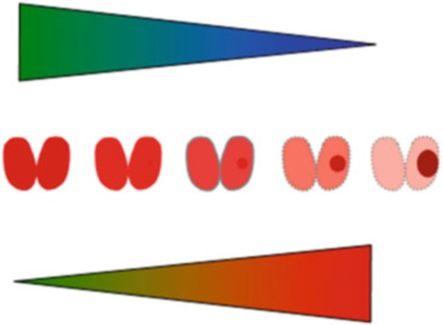
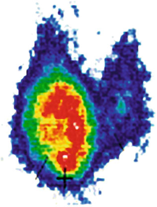
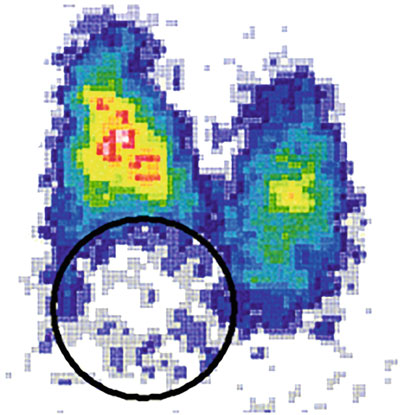

<!DOCTYPE html>
<html lang="en">
<head>
<meta charset="UTF-8">
<meta name="viewport" content="width=device-width, initial-scale=1.0">
<title>Surgical Insight Hub — Thyroid Nodule Monograph</title>
<link href="https://fonts.googleapis.com/css2?family=Playfair+Display:wght@400;600;700&family=Source+Serif+4:ital,opsz,wght@0,8..60,300;0,8..60,400;0,8..60,600;1,8..60,300;1,8..60,400&family=JetBrains+Mono:wght@400;500&display=swap" rel="stylesheet">
<link rel="stylesheet" href="../../css/theme.css?v=4.0.0">
<link rel="stylesheet" href="../../css/shared.css">
<script>
  const savedTheme = localStorage.getItem('sih-theme') || 'light';
  if (savedTheme === 'dark') document.documentElement.setAttribute('data-theme', 'dark');
</script>
<style>
:root {
  --primary:   #4C1D95; 
  --primary-dk:#2E1065;
  --primary-lt:#F5F3FF;
  --accent:    #7C3AED;
  --accent2:   #E11D48;
  --gold:      #D97706;
  --gold-lt:   #FEF3C7;
  --red:       #E11D48;
  --red-lt:    #FFF1F2;
  --bg:        #FAFAFA;
  --bg2:       #F4F4F5;
  --border:    #E5E7EB;
  --text:      #0F172A;
  --muted:     #64748B;
  --white:     #FFFFFF;
  --sidebar-w: 320px;
}
[data-theme="dark"] {
  --bg: #0A0702;
  --bg2: #140E05;
  --text: #F3F4F6;
  --muted: #A3A3A3;
  --border: rgba(255,255,255,0.08);
  --primary-lt: #2E1065;
  --white: #140E05;
}
*,*::before,*::after{box-sizing:border-box;margin:0;padding:0;}
html{scroll-behavior:smooth;}
body{font-family:'Source Serif 4',Georgia,serif;background:var(--bg);color:var(--text);font-size:16px;line-height:1.75;}

#sidebar {
  position: fixed; top: 0; left: 0; width: var(--sidebar-w); height: 100vh;
  background: var(--primary-dk); color: #F5F3FF;
  display: flex; flex-direction: column;
  z-index: 1000; overflow: hidden;
  transform: translateX(-100%);
  transition: transform 0.3s cubic-bezier(0.4, 0, 0.2, 1);
  box-shadow: 4px 0 24px rgba(0,0,0,0.4);
}
body.sidebar-open #sidebar { transform: translateX(0); }

#sidebar-overlay {
  position: fixed; top: 0; left: 0; width: 100vw; height: 100vh;
  background: rgba(46, 16, 101, 0.7); backdrop-filter: blur(3px);
  z-index: 950; opacity: 0; pointer-events: none; transition: opacity 0.3s ease;
}
body.sidebar-open #sidebar-overlay { opacity: 1; pointer-events: auto; }

#sidebar-toggle {
  position: fixed; top: 72px; left: 24px; z-index: 900;
  background: var(--primary); color: white;
  border: none; border-radius: 30px;
  padding: 10px 18px; font-family: 'JetBrains Mono', monospace; font-size: 13px; font-weight: 600;
  letter-spacing: 0.05em; cursor: pointer; box-shadow: 0 4px 12px rgba(0,0,0,0.25);
  display: flex; align-items: center; gap: 8px; transition: all 0.2s;
}
#sidebar-toggle:hover { background: var(--accent2); transform: translateY(-2px); }

#sidebar-header{padding:20px 20px 14px;border-bottom:1px solid rgba(255,255,255,0.08);flex-shrink:0;}
#sidebar-header .logo{font-family:'Playfair Display',serif;font-size:13px;font-weight:700;color:var(--accent2);letter-spacing:0.08em;text-transform:uppercase;margin-bottom:4px;}
#sidebar-header .sub{font-size:10.5px;color:rgba(245,243,255,0.6);letter-spacing:0.04em;}
#sidebar-search{padding:10px 14px;border-bottom:1px solid rgba(255,255,255,0.05);flex-shrink:0;}
#sidebar-search input{width:100%;background:rgba(255,255,255,0.05);border:1px solid rgba(255,255,255,0.1);border-radius:6px;color:#F5F3FF;padding:6px 10px;font-size:12px;font-family:'Source Serif 4',serif;outline:none;transition:border-color 0.2s;}
#sidebar-search input::placeholder{color:rgba(245,243,255,0.4);}
#sidebar-search input:focus{border-color:var(--accent2);}
#sidebar-nav{flex:1;overflow-y:auto;padding:8px 0 20px;}
#sidebar-nav::-webkit-scrollbar{width:4px;}
#sidebar-nav::-webkit-scrollbar-thumb{background:rgba(255,255,255,0.15);border-radius:2px;}
.vol-label{font-size:9.5px;font-weight:600;letter-spacing:0.12em;text-transform:uppercase;color:var(--accent2);padding:14px 18px 4px;}
.nav-item{display:block;padding:8px 18px 8px 22px;font-size:12.5px;color:rgba(245,243,255,0.8);text-decoration:none;border-left:2px solid transparent;transition:all 0.15s;line-height:1.4;}
.nav-item:hover{color:#fff;background:rgba(255,255,255,0.03);border-left-color:rgba(225,29,72,0.5);}
.nav-item.active{color:#fff;background:rgba(255,255,255,0.06);border-left-color:var(--accent2);font-weight:600;}
.nav-item .num{font-family:'JetBrains Mono',monospace;font-size:10px;color:rgba(245,243,255,0.4);margin-right:6px;}

#main{margin-left:0; min-height:100vh;}
#hero{background:linear-gradient(135deg,var(--primary-dk) 0%,#4C1D95 60%,#2E1065 100%);color:white;padding:120px 72px 60px;position:relative;overflow:hidden;}
#hero::before{content:'';position:absolute;top:-60px;right:-60px;width:380px;height:380px;background:radial-gradient(circle,rgba(225,29,72,0.15) 0%,transparent 70%);pointer-events:none;}
#hero::after{content:'';position:absolute;bottom:0;left:0;right:0;height:3px;background:linear-gradient(90deg,var(--accent2),var(--gold),transparent);}
#hero .eyebrow{font-family:'JetBrains Mono',monospace;font-size:11px;letter-spacing:0.16em;color:var(--accent2);text-transform:uppercase;margin-bottom:14px;}
#hero h1{font-family:'Playfair Display',serif;font-size:42px;font-weight:700;line-height:1.15;margin-bottom:10px;color:#fff;}
#hero .subtitle{font-size:18px;color:rgba(255,255,255,0.8);font-style:italic;margin-bottom:28px;}
#hero .badges{display:flex;gap:10px;flex-wrap:wrap;}
#hero .badge{background:rgba(255,255,255,0.1);border:1px solid rgba(255,255,255,0.2);border-radius:20px;padding:4px 14px;font-size:12px;color:rgba(255,255,255,0.95);font-family:'JetBrains Mono',monospace;}

.content-wrap{max-width:900px;margin:0 auto;padding:40px 48px 80px;}

.callout{margin:18px 0;padding:14px 18px;border-radius:0 8px 8px 0;border-left:4px solid;font-size:14px;line-height:1.65;}
.callout .label{font-family:'JetBrains Mono',monospace;font-size:10px;font-weight:600;letter-spacing:0.12em;text-transform:uppercase;display:block;margin-bottom:4px;}
.callout.pearl{background:var(--gold-lt);border-color:var(--gold);color:var(--text);}
.callout.pearl .label{color:var(--gold);}
.callout.warn{background:var(--red-lt);border-color:var(--red);color:var(--text);}
.callout.warn .label{color:var(--red);}

@media(max-width:900px) {
  .content-wrap { padding: 20px 20px 60px; }
  #hero { padding: 80px 20px 40px; }
  #hero h1 { font-size: 30px; }
  #sidebar-toggle { top: 64px; left: 16px; }
}
</style>
<link rel="icon" type="image/png" href="../../assets/images/Surgical_Insight_Hub_Logo.png">
</head>
<body>

<nav class="nav" id="mainNav">
  <div class="nav-left">
    <a href="../../index.html" class="nav-pill">
      <div class="nav-logo-img">
        
      </div>
      <div>
        <div class="nav-brand-text">Surgical Insight Hub</div>
        <div class="nav-brand-sub">The Residency Journal</div>
      </div>
    </a>
  </div>
  <div class="nav-links-pill">
    <a href="../../index.html">Home</a>
    <a href="../../notes.html" class="active">Notes</a>
    <a href="../operative_approach.html">Playbook</a>
    <a href="../../arena.html?v=4.0.0">MCQ Arena</a>
    <a href="../../podcast.html">Podcast</a>
    <a href="../../surgery-talk.html">Surgery Talk</a>
    <a href="../../about.html">About</a>
  </div>
  <div class="nav-right">
    <button class="theme-toggle" id="themeToggle" aria-label="Toggle Theme">
      <svg id="moonIcon" viewBox="0 0 24 24" width="18" height="18"><path d="M21 12.79A9 9 0 1 1 11.21 3 7 7 0 0 0 21 12.79z"></path></svg>
      <svg id="sunIcon" style="display:none;" viewBox="0 0 24 24" width="18" height="18"><circle cx="12" cy="12" r="5"></circle><line x1="12" y1="1" x2="12" y2="3"></line><line x1="12" y1="21" x2="12" y2="23"></line><line x1="4.22" y1="4.22" x2="5.64" y2="5.64"></line><line x1="18.36" y1="18.36" x2="19.78" y2="19.78"></line><line x1="1" y1="12" x2="3" y2="12"></line><line x1="21" y1="12" x2="23" y2="12"></line><line x1="4.22" y1="19.78" x2="5.64" y2="18.36"></line><line x1="18.36" y1="5.64" x2="19.78" y2="4.22"></line></svg>
    </button>
    <a href="https://t.me/sugicalInsightHub" target="_blank" class="nav-tg-btn" title="Join Telegram">
      <svg width="18" height="18" viewBox="0 0 24 24" fill="#f0d080"><path d="M12 0C5.37 0 0 5.37 0 12s5.37 12 12 12 12-5.37 12-12S18.63 0 12 0zm5.89 8.22l-1.97 9.28c-.15.66-.54.82-1.08.51l-3-2.21-1.45 1.39c-.16.16-.3.3-.61.3l.21-3.05 5.56-5.02c.24-.21-.05-.33-.37-.12l-6.87 4.33-2.96-.92c-.64-.2-.66-.64.14-.95l11.57-4.46c.54-.19 1.01.13.83.94z"/></svg>
    </a>
    <a href="../../arena.html?v=4.0.0" class="nav-btn arena-btn">MCQ Arena</a>
  </div>
</nav>

<div class="mob-nav-overlay" id="mobNavOverlay" onclick="closeMobNav()"></div>
<div class="mob-nav-sheet" id="mobNavSheet">
  <div class="mob-nav-handle"></div>
  <a href="../../index.html" onclick="closeMobNav()">Home</a>
  <a href="../../notes.html" onclick="closeMobNav()">Notes</a>
  <a href="../operative_approach.html" onclick="closeMobNav()">Playbook</a>
  <a href="../../podcast.html" onclick="closeMobNav()">Podcast</a>
  <a href="../../surgery-talk.html" onclick="closeMobNav()">Surgery Talk</a>
  <a href="../../arena.html" onclick="closeMobNav()">MCQ Arena</a>
  <a href="../../about.html" onclick="closeMobNav()">About</a>
  <a href="https://t.me/sugicalInsightHub" target="_blank" rel="noopener" onclick="closeMobNav()" style="color: var(--brand-gold); font-weight: 800;">Join Telegram Community</a>
</div>

<button id="sidebar-toggle" onclick="toggleSidebar()">
  <span>📜</span> Chapter Navigation
</button>
<div id="sidebar-overlay" onclick="closeSidebar()"></div>

<aside id="sidebar">
  <div id="sidebar-header">
    <div class="logo">Surgical Insight Hub</div>
    <div class="sub">Thyroid Dx Textbook Series</div>
  </div>
  <div id="sidebar-search">
    <input type="text" placeholder="Search chapters..." oninput="filterNav(this.value)">
  </div>
  <nav id="sidebar-nav">
    <div class="vol-label">All 25 Endocrine Chapters</div>
    <a class="nav-item" href="endocrine_ch01_regulation_of_thyroid_function.html"><span class="num">Ch 1</span>Regulation of Thyroid Function, Synthesis, and Function of Thyroid Hormones</a>
<a class="nav-item" href="endocrine_ch02_tests_of_thyroid_function.html"><span class="num">Ch 2</span>Tests of Thyroid Function</a>
<a class="nav-item" href="endocrine_ch03_thyroid_autoantibodies.html"><span class="num">Ch 3</span>Thyroid Autoantibodies</a>
<a class="nav-item" href="endocrine_ch04_nonisotopic_thyroid_imaging.html"><span class="num">Ch 4</span>Nonisotopic Thyroid Imaging</a>
<a class="nav-item" href="endocrine_ch05_nontoxic_goiter.html"><span class="num">Ch 5</span>Nontoxic Goiter</a>
<a class="nav-item active" href="endocrine_ch06_thyroid_nodule.html"><span class="num">Ch 6</span>Thyroid Nodule</a>
<a class="nav-item" href="endocrine_ch07_hashimoto_s_thyroiditis.html"><span class="num">Ch 7</span>Hashimoto´s Thyroiditis</a>
<a class="nav-item" href="endocrine_ch08_postpartum_thyroiditis_and_sil.html"><span class="num">Ch 8</span>Postpartum Thyroiditis and Silent Thyroiditis</a>
<a class="nav-item" href="endocrine_ch09_acute_and_subacute_thyroiditis.html"><span class="num">Ch 9</span>Acute and Subacute Thyroiditis</a>
<a class="nav-item" href="endocrine_ch10_classification_and_etiopathoge.html"><span class="num">Ch 10</span>Classification and Etiopathogenesis of Hypothyroidism</a>
<a class="nav-item" href="endocrine_ch11_congenital_hypothyroidism.html"><span class="num">Ch 11</span>Congenital Hypothyroidism</a>
<a class="nav-item" href="endocrine_ch12_central_hypothyroidism.html"><span class="num">Ch 12</span>Central Hypothyroidism</a>
<a class="nav-item" href="endocrine_ch13_diagnosis_and_treatment_of_hyp.html"><span class="num">Ch 13</span>Diagnosis and Treatment of Hypothyroidism</a>
<a class="nav-item" href="endocrine_ch14_graves_disease.html"><span class="num">Ch 14</span>Graves´ Disease</a>
<a class="nav-item" href="endocrine_ch15_graves_ophthalmopathy.html"><span class="num">Ch 15</span>Graves´ Ophthalmopathy</a>
<a class="nav-item" href="endocrine_ch16_treatment_of_graves_disease.html"><span class="num">Ch 16</span>Treatment of Graves´ Disease</a>
<a class="nav-item" href="endocrine_ch17_toxic_adenoma_and_multinodular.html"><span class="num">Ch 17</span>Toxic Adenoma and Multinodular Toxic Goiter</a>
<a class="nav-item" href="endocrine_ch18_pathogenesis_of_thyroid_carcin.html"><span class="num">Ch 18</span>Pathogenesis of Thyroid Carcinoma</a>
<a class="nav-item" href="endocrine_ch19_differentiated_thyroid_carcino.html"><span class="num">Ch 19</span>Differentiated Thyroid Carcinoma of Follicular Origin</a>
<a class="nav-item" href="endocrine_ch20_medullary_carcinoma.html"><span class="num">Ch 20</span>Medullary Carcinoma</a>
<a class="nav-item" href="endocrine_ch21_anaplastic_and_other_forms_of_.html"><span class="num">Ch 21</span>Anaplastic and Other Forms of Thyroid Carcinoma</a>
<a class="nav-item" href="endocrine_ch22_new_medical_treatment_for_thyr.html"><span class="num">Ch 22</span>New (Medical) Treatment for Thyroid Carcinoma</a>
<a class="nav-item" href="endocrine_ch23_thyroid_physiology_and_thyroid.html"><span class="num">Ch 23</span>Thyroid Physiology and Thyroid Diseases in Pregnancy</a>
<a class="nav-item" href="endocrine_ch24_non_thyroidal_illness.html"><span class="num">Ch 24</span>Non-thyroidal Illness</a>
<a class="nav-item" href="endocrine_ch25_drugs_and_other_substances_int.html"><span class="num">Ch 25</span>Drugs and Other Substances Interfering with Thyroid Function</a>

  </nav>
</aside>

<main id="main">
<header id="hero">
  <div class="eyebrow">Endocrine Surgery · Chapter 6</div>
  <h1>Thyroid Nodule</h1>
  <p class="subtitle">Structured Surgical Monograph formatted with fluid prose, inline textbook diagnostic plates, and clinical guidance.</p>
  <div class="badges">
    <span class="badge">Chapter 6</span>
    <span class="badge">Inline Plates</span>
    <span class="badge">Thyroid Dx PDF</span>
  </div>
</header>

<div class="content-wrap">
  <section class="topic">
    
    <div class="callout pearl" style="margin-bottom:28px;">
      <span class="label">🎓 TEXTBOOK MONOGRAPH — THYROID DX</span>
      Full surgical monograph extracted directly from <strong>Thyroid Pathology and Laboratory Diagnostics</strong> (Chapter 6: Thyroid Nodule). Features complete text, formatted clinical guidance, and inline textbook figures.
    </div>
<p style="font-size:16px; line-height:1.75; margin-bottom:16px; color:var(--text);">Thyroid Nodule Markus Eszlinger, Laszlo Hegedüs, and Ralf Paschke Contents Definition and Clinical Manifestations .......................................................... Mutagenesis as the Cause of Thyroid Nodules ................................................. Autonomously Functioning Thyroid Nodules (Hot Thyroid Nodules) ........................ Cold Thyroid Nodules ...........................................................................</p>
<ul style="margin:12px 0 20px 20px;">
<li style="margin-bottom:8px; line-height:1.65;">Clinical Aspects .................................................................................</li>
</ul>
<h3 style="font-family:'Playfair Display',serif; font-size:20px; color:var(--primary); margin:32px 0 14px; border-bottom:1px solid var(--border); padding-bottom:6px;">Diagnosis ........................................................................................</h3>

                <div style="display:flex; gap:16px; margin:20px 0; padding:16px; border-radius:14px; border:1px solid var(--border); background:var(--bg2); align-items:center;">
                  <div style="width:180px; min-width:180px; height:140px; border-radius:10px; overflow:hidden; border:1px solid var(--border); background:#fff; display:flex; align-items:center; justify-content:center; padding:6px; flex-shrink:0;">
                    
                  </div>
                  <div style="flex:1;">
                    <div style="font-family:'JetBrains Mono',monospace; font-size:11px; font-weight:700; color:var(--accent2); text-transform:uppercase; margin-bottom:6px;">Textbook Illustration &amp; Diagnostic Plate</div>
                    <div style="font-size:13.5px; color:var(--muted); line-height:1.5;">High-resolution diagnostic plate illustrating diagnosis ........................................................................................ in Chapter 6.</div>
                  </div>
                </div>
<p style="font-size:16px; line-height:1.75; margin-bottom:16px; color:var(--text);">Diagnostic Imaging .............................................................................. Ultrasonography ............................................................................. Scintigraphy .................................................................................. Fine-Needle Aspiration (FNA) Cytology ....................................................... “Rule Out” Malignancy ...................................................................... “Rule In” Malignancy ....................................................................... MicroRNAs (miRNAs) in FNA Samples ................................................... Two-Step Approach Combining Mutation Testing and miRNA Classifiers ............... Implications of the Introduction of NIFTP on Molecular Diagnosis .......................</p>
<h3 style="font-family:'Playfair Display',serif; font-size:20px; color:var(--primary); margin:32px 0 14px; border-bottom:1px solid var(--border); padding-bottom:6px;">Treatment of Autonomously Functioning Thyroid Nodules ...................................</h3>

                <div style="display:flex; gap:16px; margin:20px 0; padding:16px; border-radius:14px; border:1px solid var(--border); background:var(--bg2); align-items:center;">
                  <div style="width:180px; min-width:180px; height:140px; border-radius:10px; overflow:hidden; border:1px solid var(--border); background:#fff; display:flex; align-items:center; justify-content:center; padding:6px; flex-shrink:0;">
                    
                  </div>
                  <div style="flex:1;">
                    <div style="font-family:'JetBrains Mono',monospace; font-size:11px; font-weight:700; color:var(--accent2); text-transform:uppercase; margin-bottom:6px;">Textbook Illustration &amp; Diagnostic Plate</div>
                    <div style="font-size:13.5px; color:var(--muted); line-height:1.5;">High-resolution diagnostic plate illustrating treatment of autonomously functioning thyroid nodules ................................... in Chapter 6.</div>
                  </div>
                </div>
<p style="font-size:16px; line-height:1.75; margin-bottom:16px; color:var(--text);">Antithyroid Drugs ............................................................................ Surgery ....................................................................................... M. Eszlinger Department of Oncology and Arnie Charbonneau Cancer Institute, Cumming School of Medicine, University of Calgary, Calgary, AB, Canada e-mail: markus.eszlinger1@ucalgary.ca L. Hegedüs Department of Endocrinology and Metabolism, Odense University Hospital, Odense, Denmark e-mail: laszlo.hegedus@rsyd.dk R. Paschke (*) Section of Endocrinology and Metabolism, Departments of Medicine, Oncology, Biochemistry and Molecular Biology and Arnie Charbonneau Cancer Institute, Cumming School of Medicine, University of Calgary, Calgary, AB, Canada e-mail: ralf.paschke@ucalgary.ca # Springer International Publishing AG, part of Springer Nature 2018 P. Vitti, L. Hegedüs (eds.), Thyroid Diseases, Endocrinology, Radioiodine Therapy ......................................................................... Cost-Effective Management of Thyroid Autonomy ........................................ Follow-Up ....................................................................................</p>
<h3 style="font-family:'Playfair Display',serif; font-size:20px; color:var(--primary); margin:32px 0 14px; border-bottom:1px solid var(--border); padding-bottom:6px;">Treatment of Cold and Isocaptant Thyroid Nodules ...........................................</h3>

                <div style="display:flex; gap:16px; margin:20px 0; padding:16px; border-radius:14px; border:1px solid var(--border); background:var(--bg2); align-items:center;">
                  <div style="width:180px; min-width:180px; height:140px; border-radius:10px; overflow:hidden; border:1px solid var(--border); background:#fff; display:flex; align-items:center; justify-content:center; padding:6px; flex-shrink:0;">
                    
                  </div>
                  <div style="flex:1;">
                    <div style="font-family:'JetBrains Mono',monospace; font-size:11px; font-weight:700; color:var(--accent2); text-transform:uppercase; margin-bottom:6px;">Textbook Illustration &amp; Diagnostic Plate</div>
                    <div style="font-size:13.5px; color:var(--muted); line-height:1.5;">High-resolution diagnostic plate illustrating treatment of cold and isocaptant thyroid nodules ........................................... in Chapter 6.</div>
                  </div>
                </div>
<p style="font-size:16px; line-height:1.75; margin-bottom:16px; color:var(--text);">Thyroid Hormone Treatment ................................................................ Surgery ....................................................................................... Percutaneous Interventional Therapy ........................................................</p>
<h3 style="font-family:'Playfair Display',serif; font-size:20px; color:var(--primary); margin:32px 0 14px; border-bottom:1px solid var(--border); padding-bottom:6px;">References .......................................................................................</h3>
<p style="font-size:16px; line-height:1.75; margin-bottom:16px; color:var(--text);">Abstract Benign thyroid nodules are highly prevalent in iodine-deficient areas. Histolog- ically, benign thyroid nodules are characterized by morphologic criteria as encap- sulated lesions (true adenomas) or adenomatous nodules, which lack a capsule. On functional grounds, nodules are classified as either “cold,” “normal,” or “hot,” depending on whether they show decreased, normal, or increased uptake on scintiscan. Approximately 50–85% of all nodules are “cold,” up to 40% are scintigraphically indifferent and about 10% are “hot,” although the prevalence will vary geographically with the ambient iodine supply and with the clinical setting. Hot thyroid nodules (autonomously functioning thyroid nodules, AFTNs) are mainly due to mutations which confer a constitutive activation of the cAMP cascade (e.g., TSHR and Gsα mutations) which results in a stimulation of growth and function. In contrast, the molecular etiology of cold thyroid nodules (CTNs) is still largely unknown. Thyroid autonomy (i.e., AFTNs) is an almost exclusively benign disease, and there is little evidence in the literature to suggest the contrary. In contrast, the differential diagnosis of scintigraphically indifferent and CTNs includes benign follicular adenoma and adenomatous nodules, as well as papillary thyroid carci- noma and its variants and follicular thyroid carcinoma. While fine-needle aspira- tion cytology is currently the most sensitive and specific tool to select thyroid nodules for surgery after prioritization by assessment of ultrasound malignancy criteria, it is characterized by an inherent limitation, resulting in “indeterminate” cytologies. Molecular tests in the form of “rule out” and “rule in” malignancy tests have been proposed to fill this diagnostic gap. The most important therapeutic options for hot nodules are radioiodine therapy or surgery and surgery for scintigraphically indifferent and CTNs if symptomatic or associated with increased malignancy risk. Keywords Autonomously functioning thyroid nodules · Cold thyroid nodules · Mutations · Ultrasonography · Scintigraphy · Fine-needle aspiration cytology · Molecular diagnostics · Antithyroid drug treatment · Surgery · Radioiodine therapy · Thyroid hormone treatment · Percutaneous interventional therapy M. Eszlinger et al. Definition and Clinical Manifestations Thyroid nodules can be symptomatic or asymptomatic, visible on inspection, or palpable or identified by imaging techniques, such as ultrasound. Benign thyroid nodules are highly prevalent in iodine-deficient areas. Histologically, benign thyroid nodules are characterized by morphologic criteria – according to the World Health Organization (WHO) classification – as encapsulated lesions (true adenomas) or adenomatous nodules, which lack a capsule (Chan et al. 2004). On functional grounds, nodules are classified as either “cold,” “normal,” or “hot,” depending on whether they are hypofunctional, normofunctional, or hyperfunctional, and show decreased, normal, or increased uptake on scintiscan (Fig. 1). Approximately 50–85% of all nodules are “cold,” up to 40% are scintigraphically indifferent, and Thyroid  nodules True tumours (clonal origin) Thyroid  nodules True tumours (clonal origin) Thyroid  nodules hyper- hypo- functional normo- carcinomas adenomas hyper- hypo- functional normo- adenomatous/ hyperplastic nodules molecular level histologic level polyclonal monoclonal no capsule capsule/specific growth pattern functional level hyperfunctional (“autonomously functioning/ hot nodules”) normofunctional hypofunctional (“cold nodules”) (“adenomas“) (“adenomatous/ hyperplastic nodules“) „true“ tumors (clonal origin) Fig. 1 The classification of thyroid nodules on the basis of functional, histologic, and molecular criteria. On the functional level, thyroid nodules are classified as either “cold,” “normal,” or “hot,” depending on whether they are hypofunctional, normofunctional, or hyperfunctional. On the histological level, thyroid nodules are classified as adenomas in the presence of a capsule and a growth pattern that is different from the surrounding normal parenchyma or as adenomatous/ hyperplastic nodules when lacking a capsule. On the molecular level, monoclonal nodules are considered as true tumors (adenomas/carcinomas), while polyclonal nodules are considered as adenomatous/hyperplastic nodules. Clonality studies imply that the majority of thyroid nodules are “true” thyroid tumors compared to polyclonal hyperplastic nodules. However, there is no clear overlap between histologic and molecular classification Thyroid Nodule about 10% are “hot” (Belfiore et al. 1992; Knudsen et al. 2000), although the prevalence will vary geographically with the ambient iodine supply and with the clinical setting. The classification of thyroid nodules on the molecular level, based on results from clonality studies, implies that the majority of thyroid nodules are “true” thyroid tumors (monoclonal) as opposed to polyclonal adenomatous/hyperplastic nodules. Traditionally, only thyroid adenomas are considered true tumors, on the basis of an exclusive histologic definition – the presence of a capsule and a growth pattern that is different from the surrounding normal parenchyma in an otherwise normal thyroid gland. Strict histologic criteria for an adenoma and its differentiation from adeno- matous/hyperplastic thyroid nodules (without a capsule) are, however, difficult to obtain in the frequent presence of goiter or thyroiditis. The biological basis for separating adenomatous/hyperplastic thyroid nodules from true tumors should, therefore, also depend on their clonality (Chan et al. 2004). Since many thyroid nodules without a capsule (adenomatous/hyperplastic nodules) are monoclonal, a mixed histologic and molecular definition of true thyroid tumors, as outlined in Fig. 1, appears more objective and consistent. Mutagenesis as the Cause of Thyroid Nodules Mutations that confer a growth advantage (e.g., TSHR or Gsα protein mutations) very likely initiate focal growth. Hence, autonomously functioning thyroid nodules (AFTNs; “hot” thyroid nodules) are likely to develop from small cell clones, which contain advantageous mutations as shown for the TSHR in “hot” microscopic regions of euthyroid goiters (Krohn et al. 2000). Based on the identification of somatic mutations and the predominant clonal origin of AFTNs and cold thyroid nodules (CTNs), the following sequence of events could lead to thyroid nodular transformation in three steps (Krohn et al. 2005). First, iodine deficiency, nutritional goitrogens, or autoimmunity cause diffuse thyroid hyperplasia. Then, at this stage of thyroid hyperplasia, increased proliferation together with a possible DNA damage due to H2O2 action causes a higher mutation load, i.e., a higher number of cells bearing mutations (Krohn et al. 2007). Some of these spontaneous mutations confer constitutive activation of the cAMP cascade (e.g., TSHR and Gsα mutations) which stimulates growth and function. Finally, in a proliferating thyroid, growth factor expression [e.g., insulin-like growth factor</p>
<ul style="margin:12px 0 20px 20px;">
<li style="margin-bottom:8px; line-height:1.65;"><strong>1 (IGF-1), transforming</strong> growth factor-β (TGF-β), or epidermal growth factor</li>
</ul>
<p style="font-size:16px; line-height:1.75; margin-bottom:16px; color:var(--text);">(EGF)] is increased. As a result of growth factor co-stimulation, most cells divide and form small clones. After increased growth factor expression ceases, small clones with activating mutations will further proliferate if they can achieve self-stimulation. They could thus form small foci, which could develop into thyroid nodules. This mechanism could explain AFTNs by advantageous mutations that both initiate growth and function of the affected thyroid cells as well as CTNs by mutations that stimulate proliferation only (e.g., RAS mutations or other mutations in the RAS/RAF/MEK/ERK/MAP cascade) (Xing 2013). M. Eszlinger et al. Autonomously Functioning Thyroid Nodules (Hot Thyroid Nodules) Somatic point mutations that constitutively activate the TSHR were first identified by Parma and co-workers in AFTNs (Parma et al. 1993). However, in different studies the prevalence of TSHR and Gsα mutations in AFTNs has been reported to vary from 8–82% to 8–75%, respectively (Parma et al. 1993; Fuhrer et al. 1997; Georgopoulos et al. 2003; Gozu et al. 2006). Available studies differ in the extent of mutation detection and the screening methods. A comparison with respect to the obvious differences between the studies has been done elsewhere (Vassart 2004; Krohn and Paschke 2001a). A comprehensive study using the more sensitive denaturing gradient gel electrophoresis (Garcia-Delgado et al. 1998; Trulzsch et al. 1999) revealed a frequency of 57% TSHR mutations and 3% Gsα mutations in 75 consecutive AFTNs (Trulzsch et al. 2001). More recently, a recurrent hot-spot mutation (c.1712A>G; p.Gln571Arg) in the enhancer of zeste homolog 1 (EZH1) gene, which codes for a catalytic subunit of the polycomb complex, has been identified by a whole-exome sequencing approach (Calebiro et al. 2016). Targeted screening in an independent cohort confirmed that this mutation occurs with high frequency (27%) in AFTNs, strongly associated with the occurrence of TSHR and Gsα protein mutations (Calebiro et al. 2016). Functional studies have revealed that this mutation increases proliferation of thyroid cells (Calebiro et al. 2016). The association between EZH1 and TSHR mutations suggests a two-hit model for the pathogenesis of these tumors, whereby constitutive activation of the cAMP pathway and EZH1 mutations cooperate to induce the hyperproliferation of thyroid cells (Calebiro et al. 2016). These results raise the question of the molecular etiology of TSHR and Gsα mutation-negative nodules. A possible answer is given by clonal analysis of these AFTNs which demonstrates a predominant clonal origin of thyroid nodules and implies a neoplastic process driven by genetic alteration. In addition to the intracellular signaling network that is connected to the TSHR, the extracellular action of different growth factors enhances the complexity of the signal flux into the thyroid cell. Growth factors like IGF-1, EGF, TGF-β, and fibroblast growth factor (FGF) stimulate growth and dedifferentiation of thyroid epithelial cells (Van Sande et al. 1995). Studies focused on insulin and IGF show a permissive effect of insulin and IGF-I on TSH signaling (Dugrillon et al. 1990; Roger et al. 1983) and a cooperative interaction of TSH and insulin/IGF-1 (Eggo et al. 1990). Other studies suggest inactivation of TGF-β signaling in AFTNs due to constitutively activated TSHR (e.g., resulting from TSHR mutations) (Eszlinger et al. 2004). This assumption is supported by the finding of a decreased expression of TGF-β 1 mRNA after TSH stimulation of thyrocytes (Gärtner et al. 1997). Because TGF-β 1 has been shown to inhibit iodine uptake, iodine organification, and thyroglobulin expression (Taton et al. 1993), as well as cell proliferation in different cell culture systems (Depoortere et al. 2000; Grubeck-Loebenstein et al. 1989), these findings suggest that inactivation of TGF-β signaling is a major prerequisite for increased proliferation in AFTNs (Krohn et al. 1999). Signal mod- ulation of the TSHR that would define the etiology of AFTNs and the clinical Thyroid Nodule phenotype could therefore take part at a number of stages and very likely involves genetic/epigenetic, gender-related, and environmental factors. In vivo characteristics of AFTNs include increased iodide uptake, thyroid perox- idase messenger RNA (mRNA), and protein content, as well as increased thyroid hormone secretion, which could be further stimulated by TSH (Deleu et al. 2000). Upregulation of the sodium/iodide (Na+/I) symporter (NIS) and pendrin, contrib- uting to the augmented iodine-trapping characteristics of AFTNs, has been reported by other investigators (Mian et al. 2001). Stimulation of growth has been investi- gated in AFTNs using the proliferation markers Ki67 and PCNA (Krohn et al. 1999; Deleu et al. 2000). However, the increase in the proliferation index in AFTNs was found to be relatively low (two- to threefold) compared to the surrounding normal thyroid tissue. These data are in agreement with the slow course for the evolution of nodule growth and overt hyperfunction in AFTNs (Fig. 2). However, the data is difficult to reconcile with the evolution of macroscopic AFTNs from a single mutated cell (estimated number of 30 cell divisions to yield a nodule volume of ~1 mL) (Krohn and Paschke 2001a; Kimura et al. 2001) and thus more likely reflects the end-stage rather than the initiation of disease. Cold Thyroid Nodules The term “cold” indicates reduced uptake on scintiscan. Since a histological diag- nosis is typically employed to exclude thyroid malignancy, many investigations of thyroid nodules only refer to the histological diagnosis of thyroid adenoma. This histological entity should not be confounded with the scintigraphically characterized entity “cold nodule,” which like AFTNs or “warm nodules” can histologically appear as thyroid adenomas or adenomatous nodules according to the WHO classi- fication (Hedinger 1988). In contrast, focal hyperplasia is not very well explained at the molecular level and has been discussed in detail elsewhere as the cause of thyroid tumors (Derwahl and Studer 2001; Studer et al. 1989). A monoclonal origin has been detected for the majority of cold thyroid nodules, which implies nodular develop- ment from a single mutated thyroid cell (Krohn et al. 2001). Normal Normal Nodular growth Thyroid scintiscan Thyroid hormones TSH High Suppressed Fig. 2 The slow development of thyroid autonomy over years to decades M. Eszlinger et al. With reference to their functional status (i.e., reduced iodine uptake), failure in the iodide transport system or failure of the organic binding of iodide has been detected as functional aberrations of cold thyroid nodules long before the molecular compo- nents of the iodine metabolism were known. Subsequently, a decreased expression of the Na+/I symporter (NIS) in thyroid carcinomas and benign cold thyroid nodules was suggested as the molecular mechanism underlying the failure of the iodide transport [reviewed in (Dohan et al. 2001, 2003)]. However, a defective cell membrane targeting of the NIS protein is a more likely molecular mechanism accounting for the failure of the iodine uptake in CTNs (Dohan et al. 2001; Tonacchera et al. 2002). The ultimate cause of this defect is currently unknown. Compared to iodine transport, the organic binding of iodine is a multistep process with a number of protein components that still awaits final characterization (Dunn and Dunn 2001). mRNA expression of enzymatic components (e.g., thyroperoxidase (TPO) or flavoproteins) and the substrate of iodination [i.e., thyroglobulin (TG)] has been quantified in CTNs without significant differences compared with normal follicular thyroid tissue (Lazar et al. 1999; Caillou et al. 2001). TPO, TG, and thyroid-specific oxidases (THOX) have been successfully screened for molecular defects especially in congenital hypothyroidism (de Vijlder 2003). Although CTNs could be considered as a form of focal hypothyroidism, somatic mutations in enzymes that catalyze organic binding of iodine would need to exert a growth advantage on the affected cell to cause the development of a thyroid nodule. At least in the case of inactivating mutations in the TPO or THOX genes, growth advantage could result from a lack of enzyme activity which would not only reduce thyroid hormone synthesis but also follicular iodide trapping in organic iodo-compounds. Because these compounds have been shown to inhibit thyroid epithelial cell prolifera- tion (Pisarev et al. 1994), reduced synthesis could have a proliferative effect. Therefore, somatic TPO or THOX mutations could be a molecular cause of CTN. However, mutations in the TPO gene have not been detected (Krohn and Paschke 2001b). A study of 40 cold thyroid adenomas and adenomatous nodules detected RAS mutations in only a single case (Krohn et al. 2001). Moreover, in the same set of CTNs, no point mutations in the mutational hot spots of the BRAF gene were detected (Krohn and Paschke 2004). This is in line with the lack of BRAF mutations in benign follicular adenomas in other studies (Xing et al. 2004; Puxeddu et al. 2004). So far, only one study has detected a single BRAF mutation in a set of 51 follicular adenomas (Soares et al. 2003). Moreover, the gene expression for approximately 10,000 full-length genes was compared between CTNs and their corresponding normal surrounding tissue (Eszlinger et al. 2005). Increased expression of histone mRNAs and of cell cycle-associated genes like cyclin D1, cyclin H-/cyclin-dependent kinase (CDK) 7, and cyclin B most likely reflects a molecular setup for an increased proliferation in CTNs (Krohn et al. 2003). In line with the low prevalence of RAS mutations in CTNs (Krohn et al. 2001), a reduced expression of RAS-MAPK cascade-associated genes was found which might suggest a minor importance of this signaling cascade. Furthermore, gene rearrangements unique to thyroid adenomas have recently been in focus [reviewed in (Bol et al. 1999)]. These studies have led to the identification of the thyroid adenoma-associated gene (THADA) that encodes a death receptor-interacting protein (Rippe et al. 2003). Although also Thyroid Nodule reported for thyroid follicular carcinoma (Ward et al. 1998), the finding of loss of heterozygosity (LOH) at the TPO locus is characteristic for some CTNs (about 15%) but rather points to defects in a gene near TPO on the short arm of chromosome 2. Although the frequency of each of these DNA aberrations is rather low, together these chromosomal changes need to be considered in the further elucidation of the molecular etiology of CTNs.</p>
<ul style="margin:12px 0 20px 20px;">
<li style="margin-bottom:8px; line-height:1.65;">Clinical Aspects</li>
</ul>
<p style="font-size:16px; line-height:1.75; margin-bottom:16px; color:var(--text);">In a patient with thyroid autonomy, clinical features can be attributed to (a) symptoms of hyperthyroidism and (b) the growth of the nodule. The clinical presentation of hyperthyroidism varies with age, and in the elderly it is often not symptomatic (Hegedus et al. 2003; Chiovato et al. 1997). In a series of 84 French patients with overt hyperthyroidism, atrial fibrillation and anorexia dominated in the older age group (70 years), while classical signs of hyperthy- roidism, e.g., nervousness, weight loss despite increased appetite, palpitations, tremor, and heat intolerance, were more frequently observed in younger patients (50 years) (Trivalle et al. 1996). Alternatively, a patient may present with a lump or disfigurement of the neck, intolerance of a tight collar, or increase in collar size. Subclinical hyperthyroidism, defined by low or suppressed serum TSH with normal free thyroxine (T4) and free triiodothyronine (T3) levels, is more commonly observed in older patients with toxic multinodular goiter (TMNG) (Toft 2001; Berghout et al. 1990). Moreover, the incidental finding of low or suppressed TSH levels on routine investigation for other indications is frequently the first evidence of the presence of thyroid autonomy, particularly in regions with iodine deficiency. Subclinical hyperthyroidism may be associated with atrial fibrillation and a reduced bone density (Toft 2001; Abrahamsen et al. 2014). In addition, an increased overall mortality as well as cardiovascular mortality rate in patients with low serum TSH levels is well documented (Parle et al. 2001; Brandt et al. 2012; Laulund et al. 2014). Thyroid autonomy is widely viewed as an almost exclusively benign disease, and there is little evidence in the literature to suggest the contrary. Detailed pathological analyses of reported “toxic thyroid cancer” cases (0.7–6% in different series) have shown that, if classified correctly, the cancer (a) usually occurred coincidentally within the same or even in the contralateral thyroid lobe, (b) mostly represented a microcancer (<1 cm), and (c) was rarely located within the hot nodule itself (Hegedus et al. 2003; Schroder and Marthaler 1996). To date, seven cases of differentiated, scintigraphically hot, thyroid carcinomas with somatic constitutively activating TSH mutations have been reported (Jaeschke et al. 2010). Patients with isocaptant or cold thyroid nodules may have no symptoms or may suffer from compressive symptoms, whereas dysphonia, hoarseness, and dysphagia are infrequent late symptoms of thyroid cancer as most thyroid cancers present without symptoms. M. Eszlinger et al.</p>
<h3 style="font-family:'Playfair Display',serif; font-size:20px; color:var(--primary); margin:32px 0 14px; border-bottom:1px solid var(--border); padding-bottom:6px;">Diagnosis</h3>
<h3 style="font-family:'Playfair Display',serif; font-size:20px; color:var(--primary); margin:32px 0 14px; border-bottom:1px solid var(--border); padding-bottom:6px;">Diagnosis of thyroid autonomy is based on three characteristics:</h3>
<ul style="margin:12px 0 20px 20px;">
<li style="margin-bottom:8px; line-height:1.65;"><strong>1. Confirmation of</strong> clinically suspected hyperthyroidism by an abnormal thyroid function test. Typically, there is overt thyrotoxicosis (low TSH, high free thyroid hormones). However, dependent on the autonomous cell mass, subclinical hyper- thyroidism (TSH low, free T3 and free T4 normal) or even euthyroidism may be found. 2. Presence of palpable or ultrasonographic nodule(s). 3. Increased radionuclide uptake in the nodule(s) concomitant with a decreased uptake in the surrounding extranodular thyroid tissue. The most commonly used isotopes are 99mTc and 123I, both of which are transported into the thyrocytes by the sodium-iodide symporter, but only 123I is organified. Several studies have revealed a comparable diagnostic value of the two isotopes. However, discrepancies due to trapping-only nodules can be found in about 5% of AFTNs, most of which are associated with normal serum TSH (Reschini et al. 2006). The advantages of 99mTc, which is more frequently used in Europe, are its short half-life (6 h) and low cost (Nygaard et al. 1999; Ryo et al. 1983). If thyroid autonomy is suspected in a euthyroid patient, a “suppression” scan can be performed after administration of thyroid hormone (i.e., 75 μg/day T4 for</li>
<li style="margin-bottom:8px; line-height:1.65;"><strong>2 weeks followed</strong> by 150 μg/day for 2 weeks), after which uptake in all</li>
</ul>
<p style="font-size:16px; line-height:1.75; margin-bottom:16px; color:var(--text);">non-autonomous tissue will be suppressed and thyroid autonomy is unmasked (Bahre et al. 1988). Long-term studies of patients with AFTNs have shown that the natural course evolves over years or even decades. Sandrock et al. (1993) reported an overall 4.1% annual incidence of hyperthyroidism in a group of 375 untreated euthyroid AFTN patients in Germany who were followed for a mean of 53 months. Ham- burger (1980) highlighted the correlation between nodule size and development of hyperthyroidism in a group of 349 patients with AFTNs: 93.5% of patients with overt hyperthyroidism had AFTNs >3 cm in size, and patients with a euthyroid AFTN of >3 cm in size had a 20% risk of developing thyrotoxicosis during a 6-year follow-up period, as opposed to a 2–5% risk in patients with nodules <2.5 cm in size. Diagnostic Imaging Although simple and cheap, neck palpation is notoriously imprecise, both with regard to thyroid gland morphology and size determination (Jarlov et al. 1998). For this purpose, several imaging methods are available: ultrasonography, scintig- raphy, computed tomography (CT) scan, magnetic resonance (MR) imaging, and, while infrequently indicated, also positron-emission tomography (PET). Of these, ultrasonography is the first priority (Bennedbaek et al. 1999; Bennedbaek and Hegedus 2000; Bonnema et al. 2000, 2002). Thyroid Nodule Ultrasonography Ultrasonography, which is often used in Europe (Bennedbaek et al. 1999; Bonnema et al. 2000) and, at least until recently, less so in the United States (Bennedbaek and Hegedus 2000; Bonnema et al. 2002), allows determination of total thyroid volume and individual nodule evaluation for size, echogenicity, internal content, margin, shape, calcifications and regional lymph nodes, regional blood flow, nodule vascular- ity, and elasticity (Hegedus et al. 2003; Rago et al. 2007; Hegedus 2010). Classifica- tion of thyroid nodules according to a thyroid imaging reporting and data system (TI-RADS), including elastography, results in high sensitivity and negative predictive value (NPV) for the diagnosis of thyroid carcinoma. About 50% of the nodules can be classified as benign by ultrasound criteria with a risk of false negatives of only 3% (Russ et al. 2013). Ultrasonography aids in performing accurate biopsies (Hegedus 2001) and is of great help in therapeutic procedures such as cyst punctures and alcohol and laser sclerosis of solid or cystic nodules (Hegedus 2001; Bennedbaek et al. 1997; Dossing et al. 2005; Bennedbaek and Hegedus 2003). In the differentiation between malignant and benign thyroid lesions, [18F]-2- deoxy-2-fluoro-D-glucose positron-emission tomography (FDG-PET) may be a poten- tially useful tool in the evaluation of thyroid nodules with indeterminate cytological findings. Since this method has a very low false-negative rate for the detection of malignant lesions, a number of unnecessary thyroidectomies may be avoided (Sebastianes et al. 2007). Noteworthy, focal thyroid lesions, detected incidentally, are seen in around 1.6% of patients undergoing FDG-PET for non-thyroid reasons, and 35% of these cases harbor thyroid cancer (Soelberg et al. 2012). Importantly, these numbers may vary considerably depending on the selection of patients examined. Scintigraphy Scintigraphy has little place in the anatomo-topographic evaluation of the nodule, but it aids in verification of the clinical diagnosis and allows determination of the relative mass of hyperfunctioning (hot) (Fig. 3) and nonfunctioning (cold) (Fig. 4) thyroid areas. Nodules with a high uptake by scintigraphy almost never harbor clinically significant malignancy, although exceptions have been reported. 99mTc used as tracer may result in false-positive uptake in 3–8% of thyroid nodules (Hegedus et al. 2003), while iodine isotopes are devoid of this problem. Nevertheless, comparative studies have been unable to demonstrate any clinically significant differences between the two tracers (Hegedus et al. 2003). Tracers like 201thallium and 99mTc-methoxy-isobutyl- isonitrile (MIBI) have an increased uptake in differentiated malignant thyroid nodules, but the sensitivity and specificity do not support their general use (Okumura et al. 1999; Demirel et al. 2003). If the use of quantitative 99mTc-MIBI scintigraphy can better stratify patient, risk for a malignant lesion remains to be confirmed (Campenni et al. 2016). Many disregard thyroid scintigraphy in the initial evaluation of patients with nontoxic nodular goiter (Hegedus et al. 2003; Bonnema et al. 2000, 2002). M. Eszlinger et al. Nevertheless, more than two thirds of ETA members (Bennedbaek et al. 1999; Bonnema et al. 2000) routinely use scintigraphy, while less than 25% of ATA members prefer such a strategy (Bennedbaek and Hegedus 2000; Bonnema et al. 2002). Indisputable indications for scintigraphy, in the setting of a nodular goiter, are hyperthyroidism (to visualize hot nodules suitable for 131I therapy) or when fine- needle aspiration (FNA) cytology has shown a follicular neoplasm, since hot nodules with great certainty are benign (Hegedus et al. 2003). Fig. 3 Scintigraphy of a thyroid with an autonomously functioning thyroid nodule (“hot” nodule) in the right lobe Fig. 4 Scintigraphy of a thyroid with a “cold” thyroid nodule in the right lobe Thyroid Nodule Fine-Needle Aspiration (FNA) Cytology Current guidelines for the differential diagnosis and treatment of thyroid nodules recommend clinical assessment, thyroid-stimulating hormone (TSH), calcitonin (in Europe), and ultrasound for cancer risk stratification to select thyroid nodules with an increased malignancy risk to undergo fine-needle aspiration (FNA) biopsy (Gharib et al. 2016; Haugen et al. 2016). A thorough ultrasound malignancy risk stratification of thyroid nodules by standardized assessment of ultrasound character- istics can classify about 50% of thyroid nodules as definitely or very probably benign [thyroid imaging reporting and data system (TIRADS) 2 and 3)] with a false- negative risk of 0.3% (Russ et al. 2013). The remaining thyroid nodules with an increased malignancy risk (TIRADS 4A, 4B, 5) should undergo subsequent FNA cytology rated according to the Bethesda system for reporting thyroid cytopathology (Bethesda classification) (Cibas and Ali 2009). The Bethesda classification is based on five cytological diagnostic categories (nondiagnostic, benign, indeterminate, suspicious for malignancy (SFM), and malig- nant) with a subdivision of the indeterminate category into atypia of undetermined significance/follicular lesion of undetermined significance (AUS/FLUS) and follic- ular neoplasm/suspicious for a follicular neoplasm (FN/SFN). According to the National Cancer Institute Thyroid FNA State of the Science Conference, the cyto- logical categories differ by their implied risk of malignancy (ROM) which has to be verified for each local setting (Cibas and Ali 2009). While nondiagnostic and benign cytologies are characterized by a low ROM (1–4% and 0–3%, respectively), the ROM for SFM and malignant cytologies is high (60–75% and 97–99%, respec- tively). The two indeterminate categories are characterized by an intermediate ROM of 5–15% (AUS/FLUS) and 15–30% (FN/SFN) (Gharib et al. 2016; Haugen et al. 2016). A recent meta-analysis reports the cytologically benign results for 39–74% of the nodules, and 2–16% of thyroid FNAs are cytologically malignant (Bongiovanni et al. 2012). Indeterminate (AUS/FLUS, FN/SFN) FNA cytology results are due to an intrinsic limitation of thyroid FNA cytology. Vascular or capsular invasion, which are the criteria distinguishing follicular adenomas (FAs) or adenomatous nodules from follicular carcinomas (FTCs) and follicular variant papillary thyroid carcino- mas (fvPTC), cannot be detected in cytology samples. Thus, a high proportion of patients with FNAs classified as indeterminate will undergo diagnostic, potentially unnecessary, thyroid surgery with possible complications with the ultimate histology revealing only a 20% malignancy rate (Gharib et al. 2016; Haugen et al. 2016). AUS/FLUS results were observed in 1–27%, FN/SFN in 1–25%, SFM in 1–6%, and nondiagnostic in 2–24% of FNAs (Bongiovanni et al. 2012). Because of known interobserver variations of AUS/FLUS and FN/SFN diagnoses (Lewis et al. 2009; Wang et al. 2011), consensus cytopathology is an effective way to reduce discrepant or indeterminate FNA results (Cibas et al. 2013). Moreover, current guidelines also recommend repeat FNA for AUS/FLUS FNA results to increase the chance for a definitive FNA cytology diagnosis (Gharib et al. 2016). Unfortunately, evidence-based ultrasound criteria and standardized FNA cytology, according to the Bethesda classification, are not always applied in everyday practice. M. Eszlinger et al. FNA was only used in 21% of patients undergoing surgery for a single thyroid nodule in Germany (Wienhold et al. 2013), and similar low preoperative FNA rates were reported in Belgium (van den Bruel et al. 2013) and France (L’assurance maladie – Caisse Nationale 2013). Therefore, the differential diagnosis and malig- nancy risk stratification of thyroid nodules require multidisciplinary expertise and a determination of both local ultrasound practices and local malignancy rates for a given FNA result. However, even in such a multidisciplinary setting, the inherent limitation of FNA cytology described above cannot be rectified. However, accumulating evidence suggests that this limitation of AUS/FLUS and FN/SFN cytology can be compensated for by molecular diagnostic approaches which capitalize on the increasing knowledge about the molecular etiology of thyroid nodules by performing a comprehensive analysis of the transcriptional and mutational landscape of thyroid cancers (Cancer Genome Atlas Research Network 2014; Yoo et al. 2016). It was recently shown (Aragon et al. 2014) that any molecular diagnostic test, to compensate for the inherent limitation of AUS/FLUS and FN/SFN cytology, will require and cannot replace a multidisciplinary approach to the man- agement of patients with thyroid nodules. In principle, the different molecular diagnostic methodologies can be broadly classified into two categories: “rule out” malignancy or “rule in” malignancy approaches (Fig. 5). While the former aims to pre-test ROM molecular diagnoscs post-test ROM post-test = f(pre-test) indeterminate FNAC Rule out malignancy Rule in malignancy negave test outcome posive test outcome negave test outcome posive test outcome high sensivity / low specificity low sensivity / high specificity high NPV low PPV low NPV high PPV 0% 20% 40% 60% 80% 100% 0% 20% 40% 60% 80% 100% ) V P N ( e ula v e vitcid e r p e vit a g e n pre-test ROM (= prevalence of malignancy in indeterminate FNAC) 0% 20% 40% 60% 80% 100% 0% 20% 40% 60% 80% 100% ) V P P ( e ula v e v ticid e r p e vitis o p pre-test ROM (= prevalence of malignancy in indeterminate FNAC) Fig. 5 Rule out and rule in approaches and their relation to diagnostic parameters such as sensitivity, specificity, PPV, and NPV. The post-test ROM (i.e., PPV and NPV) is also shown as a function of the pre-test ROM (prevalence of malignancy in the respective cytological category). Reproduced from Eszlinger et al. 2017a Thyroid Nodule reduce the overtreatment of benign nodules, the latter aims to optimize surgical planning (primary total thyroidectomy vs. a two-staged approach with “diagnostic” lobectomy and subsequent completion surgery). Interestingly, recent data suggest that the most recent “rule in” strategies may also have the potential to rule out malignancy due to a remarkably high sensitivity (Nikiforov et al. 2014, 2015). “Rule Out” Malignancy A “rule out” test aiming to identify benign nodules (i.e., to rule out malignancy for FNA cytology indeterminate nodules) and thereby decrease the number of diagnos- tic thyroid surgeries is the Afirma gene expression classifier (GEC). In essence, the analysis of the GEC is done in two steps. While in the first step neoplasias of non-thyroidal origin are filtered out based on the expression patterns of 25 transcripts, in the second step the gene expression patterns of 142 genes are analyzed. Based on these expression patterns, the samples are classified as “benign” or “suspicious.” The analytical performance including analytical sensitivity, analyt- ical specificity, robustness, and quality control of the GEC has been verified (Walsh et al. 2012). It has been shown that RNA content and quality within the FNAs preserved in a RNA-stabilizing solution are stable for up to 6 days and that FNA storage and shipping do not significantly affect the GEC results. Furthermore, the analytical sensitivity tolerates variable RNA input and dilution of malignant FNA material down to 20%, while analytical specificity tolerates contamination with blood (up to 83%) and genomic DNA (up to 30%) with regard to false-negative results. However, high proportions of blood contamination demonstrated a potential for false-positive results (Walsh et al. 2012). The GEC is based on an exploratory study in which the expression patterns of more than 247,186 transcripts were analyzed in 315 thyroid nodules (Chudova et al. 2010). Subsequently, the established GEC was validated in 265 indeterminate FNAs (Alexander et al. 2012). The majority of the malignant samples analyzed were classical papillary thyroid cancer (cPTC) and fvPTC (72%), and only 12% were FTCs. The reported negative predictive value (NPV) for AUS/FLUS, SFN/FN, and SFM was 95%, 94%, and 85%, respectively. Based on the high NPV, the authors recommend the GEC to “rule out” malignancy in AUS/FLUS and also SFN/FN cytologies. However, the initial data regarding the rate of benign GEC for indeter- minate FNAs of 53% (Alexander et al. 2012) are at variance with data from subsequent independent studies with low patient numbers reporting benign GEC rates for indeterminate FNAs of only 26% and 27% (Marti et al. 2015; McIver et al. 2014). This would lower the positive predictive value (PPV) of the GEC for suspicious test outcomes from 44% to 47% (Alexander et al. 2012, 2014) to 16% (McIver et al. 2014). Such a low PPV, if accurate, calls into question the claimed reduction of diagnostic surgeries by 74% for the GEC for indeterminate FNAs (AUS/FLUS, SFN/FN, and SFM cytologies) (Li et al. 2011). Based on the above data, a reduction of diagnostic surgeries for indeterminate FNAs of only 25% appears more realistic. This also influences the interpretation of a previously M. Eszlinger et al. published cost-efficiency analysis (Li et al. 2011) for the GEC. A much less compelling cost reduction is also supported by an independent cost-efficiency analysis (Najafzadeh et al. 2012). Most importantly, the pre-test risk of malignancy (ROM), i.e., the prevalence of malignancy in the local test setting, profoundly influences the test reliability (Fig. 5). For the GEC, a pre-test ROM of <23% is required to achieve an NPVof >95% and a post-test ROM of <5% (McIver 2013). Whereas the pre-test ROM in the initial study (Alexander et al. 2012) was <23% for AUS/FLUS and thus achieved an NPV of >95%, highly variable ROMs for AUS/FLUS have been reported from other institutions, ranging from 6% to 48% (Wang et al. 2011) or 13–62% (Vanderlaan et al. 2011). Thus, for an institution with a ROM of 48%, the NPV for the GEC would drop to 85% (McIver 2013). This calculation illustrates that the pre-test ROM as determined by the local center’s cytopathologist strongly influences the local utility of the GEC. Despite this, many practitioners work with cytologists whose ROM is unknown. Similar calculations could also be made for SFN/FN cytologies that also show poor results for the GEC, since higher ROMs have repeatedly been reported for SFN/FN as compared to AUS/FLUS (Cibas and Ali 2009). This would make the GEC unsuitable for SFN/FN cytologies. According to the National Comprehensive Cancer Network (NCCN) guideline, a post-test ROM of <5% is required to opt for watchful waiting instead of diagnostic surgery (Tuttle et al. 2010). Whether or not this goal can be achieved for the “rule out,” GEC clearly depends on the respective pre-test ROM for the specific cytology category, which needs to be determined for all local settings. Thyroid nodules with benign FNA cytology should be followed up, possibly with the option to do a second FNA to reduce false-negative results (Gharib et al. 2016). Several follow-up studies, including 1 of 11,000 thyroid nodules investigated by FNAs (Oertel et al. 2007), showed that the detection of thyroid carcinoma in a previously FNA benign nodule is only 1% (Oertel et al. 2007; Kuma et al. 1992; Lim et al. 2013; Nou et al. 2014). Since follow-up has also been suggested for GEC benign results obtained for indeterminate, AUS/FLUS, or SFN cytology, longitudi- nal follow-up studies with long-term outcomes, determination of false-negative GEC results, and quality of life data are clearly needed for these cases to provide the necessary evidence for this claim. Currently published prospective follow-up for GEC benign nodules is limited to 8.5 months (Alexander et al. 2014). Based on these results, the recently revised American Association of Clinical Endocrinologists (AACE) guideline does not recommend in favor of or against the use of the GEC for cytologically indeterminate thyroid nodules (Gharib et al. 2016). The American Thyroid Association (ATA) guidelines recommend that diagnostic surgical excision is the long-established standard of care for the management of FN/SFN cytology nodules without specifying a specific molecular test approach. However, after considering clinical and ultrasonographic features, molecular testing may be used to supplement malignancy risk assessment data in lieu of proceeding directly with surgery. Informed patient preference and feasibility should be considered in clinical decision-making (Haugen et al. 2016). Thyroid Nodule “Rule In” Malignancy 7-Gene Panel to “Rule In” Malignancy In contrast to the GEC, which is used to exclude malignancy, the detection of cancer- specific mutations can be used to detect malignancy in a “rule in” approach. Early studies (Cantara et al. 2010; Moses et al. 2010; Nikiforov et al. 2009; Ohori et al. 2010), analyzing a 7-gene panel comprising BRAF, NRAS, HRAS, KRAS, RET/ PTC1, RET/PTC3, and PAX8/PPARG mutations, showed that about 60% of the cytologically indeterminate carcinomas can be identified by this approach (Ferraz et al. 2011). Meanwhile, major differences with respect to diagnostic parameters of the “rule in” approach have been reported with sensitivities and specificities for the 7-gene panel ranging from 18–100% to 82–100%, respectively (Nishino 2016). In their 2011 single-center study, Nikiforov and co-workers (2011) analyzed the 7-gene panel in 967 indeterminate FNAs, of which 53% had a histological diagnosis. They obtained sensitivities of 63–57% concomitant with PPVs of 88–87%, in the subcategories AUS/FLUS and FN/SFN, respectively (Nikiforov et al. 2011). Beaudenon-Huibregtse and co-workers (2014) analyzed 97 indeterminate FNAs with the 7-gene panel in a prospective multicenter study (55% with a histological diagnosis). In contradistinction to Nikiforov et al. (2011), they obtained a rather low sensitivity of 36% concomitant with a PPV of 67% in the AUS/FLUS category (Nishino 2016). Labourier et al. (2015) analyzed 282 indeterminate FNAs using a combination of the 7-gene panel and a miRNA classifier in a prospective multicenter study, 39% with a histological diagnosis. They reported a sensitivity of 69% and a PPV of 71% for the mutation panel alone for their indeterminate FNAs (Nishino 2016). Varying sensitivities and PPVs can be explained by high intra- and interobserver variabilities in the cytolog- ical and histological evaluation of thyroid nodules (Cibas et al. 2013; Fassina et al. 1993; Franc et al. 2003), different proportions of PTCs, FTCs, and fvPTCs with different mutation frequencies, a different prevalence of mutations in different populations, and variable local malignancy rates in identical cytological categories largely due to the referral practice pattern of the individual center (Ho et al. 2014). All initial studies (Cantara et al. 2010; Moses et al. 2010; Nikiforov et al. 2009, 2011; Ohori et al. 2010) used fresh FNA material stored at 80 C, which is difficult to implement in daily routine practice, as opposed to using routine air-dried FNA material (Ferraz et al. 2011). We have shown the feasibility of detecting PAX8/ PPARG and RET/PTC rearrangements in air-dried FNAs smears (Ferraz et al. 2012). Molecular testing of routine FNA samples offers several advantages over obtaining additional fresh FNA material: the same indeterminate material analyzed by cyto- pathology is also analyzed for point mutations and rearrangements. This obviates the need to prepare additional FNA material for RNA preservation or to store FNA material until completion of cytological diagnosis. The latter would then reveal about 20% of samples with indeterminate cytology that would require molecular analysis. It also precludes the need for a second FNA for molecular diagnostics. Therefore, the burden to the patient and society is reduced. This approach was evaluated in two retrospective studies (Eszlinger et al. 2014, 2015). It is also feasible on residual biopsy material using ThinPrep technology (Krane et al. 2015) or the M. Eszlinger et al. residual needle aspirate after cytologic analysis (Nikiforov et al. 2011). Most importantly, it has the advantage of not requiring additional FNA procedures or dedicated passes or special preservation and storage. After Nikiforov et al. (2011), the second largest prospective study for the 7-gene panel is the evaluation of a 2-year prospective application of the 7-gene panel for routine air-dried FNA material (Eszlinger et al. 2017b). With available histology/ follow-up data for 63% of the analyzed FNAs, this study is comparable to the study by Nikiforov et al. (2011). In contrast, the studies of Beaudenon-Huibregtse et al. (2014) and Labourier et al. (2015) showed follow-up data for only 15% and 39% of the FNAs, respectively. While the sensitivity for molecular testing in the AUS/FLUS category is comparable between the studies of Nikiforov et al. (2011) and Eszlinger et al. (2017b) (63% vs. 58%, respectively), the specificity in the AUS/FLUS category of the Eszlinger study (Eszlinger et al. 2017b) is lower compared to the Nikiforov study (Nikiforov et al. 2011) (82% vs. 99%, respectively) but identical to the specificity described in Beaudenon-Huibregtse et al. (2014). Interestingly, the sensitivity in the FN/SFN category in the Eszlinger et al. study (Eszlinger et al. 2017b) is lower than in the studies of Nikiforov et al. (2011) and Beaudenon-Huibregtse et al. (2014). This low sensitivity in the FN/SFN category is similar to a previous retrospective study (Eszlinger et al. 2014) and is mainly due to two findings. First is a very low mutation prevalence in FTCs. Second, while the prevalence of fvPTCs in the AUS/FLUS and FN/SFN categories is nearly identical, there was an exceptionally low mutation frequency in the fvPTCs in the FN/SFN category (Eszlinger et al. 2017b). While the specificities in the AUS/FLUS and FN/SFN category for the Eszlinger study (Eszlinger et al. 2017b) are comparable to the specificities observed in several previous studies (Beaudenon-Huibregtse et al. 2014; Labourier et al. 2015; Eszlinger et al. 2014, 2015), they are lower than those obtained by Nikiforov et al. (2011). As in previous studies (Eszlinger et al. 2014, 2015), this lower specificity is due to the prevalence of RAS/PAX8/PPARG mutations in histologically benign nodules. Therefore, the PPVof RAS mutations is particularly low (Eszlinger et al. 2017b). Of note, histological reevaluation of nodules initially diagnosed as FAs in two studies resulted in a reclassification of three out of ten RAS-positive tumors as minimally invasive FTCs (Eszlinger et al. 2015) and 1 out of 17 benign nodules as FTCs, while five FAs/hyperplastic nodules were reclassified as follicular tumor of uncertain malignant potential (FT-UMP) (Eszlinger et al. 2017b). These findings highlight the dilemma of high intra- and interobserver variabilities not only in the cytological but also in the histological evaluation of thyroid nodules. This illustrates the difficulty in establishing histology as the gold standard for diagnosis (Cibas et al. 2013; Fassina et al. 1993; Franc et al. 2003). Most importantly, due to different referral settings (primary vs. tertiary), the ROMs in these four prospective studies were quite different. The ROM based on cytology alone was 15% in the AUS/FLUS category in the Eszlinger study (Eszlinger et al. 2017b), which is comparable to both studies from the Nikiforov group (Nikiforov et al. 2009, 2011). However, the study of Beaudenon-Huibregtse et al. (2014) had a very high (50%) ROM in the AUS/FLUS category. In contrast to the AUS/FLUS category, the ROM for the FN/SFN category (17%) in the Eszlinger Thyroid Nodule study (Eszlinger et al. 2017b) is considerably lower in comparison to the studies by Nikiforov et al. (2011) and Beaudenon-Huibregtse et al. (2014) with a 27% and a 32% ROM, respectively. Since the PPV of a test increases with an increasing prevalence of malignancy (i.e., pre-test ROM) (Fig. 5), this low prevalence of malignant tumors in the primary referral setting, especially in the FN/SFN category, results in low PPVs in the indeterminate categories (Eszlinger et al. 2017b). The low diagnostic impact in the latter setting is also due to a low prevalence of RAS mutations in FTCs (resulting in a low sensitivity) and a rather high prevalence of RAS mutations in benign nodules (resulting in a low specificity). Therefore, whereas favorable results have been reported for tertiary referral settings with higher ROMs and higher ROM for RAS mutations, the application of the 7-gene panel as a “rule in” malignancy test in a primary referral setting with low ROM does not improve the presurgical diagnosis of thyroid FNAs. Next-Generation Sequencing to “Rule In” Malignancy Recently, the Thyroid Cancer Genome Atlas (TCGA) study comprehensively inves- tigated the molecular etiology of 496 differentiated thyroid cancers with several molecular platforms and identified driver mutations in 96.5% of differentiated thyroid cancers (Cancer Genome Atlas Research Network 2014). These results clearly support the expansion of the 7-gene panel with newly identified mutations. A few months after this publication, a targeted next-generation sequencing (tNGS) panel was published that tests for point mutations in 12 cancer genes (Nikiforova et al. 2013) and 42 types of gene fusions (Nikiforova et al. 2013, 2014, 2015). In terms of diagnostic parameters, this should result in a higher sensitivity of the assay and finally in a higher NPV, since the higher the number of analyzed cancer-specific mutations, the higher the possibility of identifying malignant nodules in the group of cytologically indeterminate FNAs. Indeed, among 98 nodules with AUS/FLUS cytology and known outcome, this tNGS panel was able to classify 20 out of the 22 cancers correctly showing a sensitivity of 91%. Moreover, this tNGS approach was also characterized by a high specificity of 92% resulting in both a high PPVand NPV (77% and 97%, respectively) (Nikiforov et al. 2015). Similar results were reported for 143 consecutive FN/SFN FNA samples (Nikiforov et al. 2014). In both studies the most frequently mutated genes were NRAS and HRAS. If these results can be confirmed in a prospective multicenter study with a larger number of samples, the reported NPV of 96% could modify the current clinical management of mutation- negative indeterminate thyroid nodules by allocating these nodules with a cancer risk <5% to follow up instead of diagnostic lobectomy as suggested by the NCCN guideline (Tuttle et al. 2014). However, no prospective independent validation studies for the tNGS panels with histologic evaluation blinded to molecular testing have yet been published. Moreover, as point mutations were only detected in a few hot spots in the tNGS studies comprising NRAS, HRAS, KRAS, PTEN, EIF1AX, BRAF, TERT, and gene fusions were detected in only 5 of 42 analyzed gene fusions, more limited mutation panels analyzed with different technologies like mass spec- trometry may be a more cost-efficient alternative to tNGS. M. Eszlinger et al. Finally, a recent study using RNA sequencing reported mutations in only 19 out of 32 histologically malignant tumors. Furthermore, in a limited number of FNAs, genetic alterations were detected in only 19 out of 44 malignant samples (43% sensitivity) (Pagan et al. 2016). These findings are at variance with the results of the TCGA study (Cancer Genome Atlas Research Network 2014) and also with two preliminary studies using tNGS for indeterminate FNAs (Nikiforov et al. 2014, 2015). Nonetheless, tNGS strategies for a mutation detection based on “rule in” and possibly also a “rule out” approach may well have a gap. This remains to be determined in multicenter studies with sufficient sample sizes and known FNA malignancy risks. Diagnostic Relevance of RAS Mutations for “Rule In” Malignancy While the presurgical detection of BRAF mutations and RET/PTC fusions has been associated with a 100% ROM (Cantara et al. 2010; Nikiforov et al. 2009, 2011; Beaudenon-Huibregtse et al. 2014; Eszlinger et al. 2014), the ROM for RAS muta- tions is uncertain since its association with thyroid cancer varies between 19% and 85% (Ohori et al. 2010; Nikiforov et al. 2011; Beaudenon-Huibregtse et al. 2014; Eszlinger et al. 2014, 2015; Krane et al. 2015). To further elucidate these discrepancies, we reviewed reports of RAS mutations in malignant [FTCs, fvPTCs, and Hurthle cell carcinoma (HCC)] and benign [FAs, adenomatous nodules, benign goiters, Hurthle cell adenomas (HCA)] thyroid lesions from 1995 to present. We included studies of adults with a sample size over 50, and with analyses of FNA and/or surgical samples by a pathologist. Reviews and studies lacking methodological details were excluded. Among 51 studies, two independent investigators identified 20 studies that met the inclusion and exclusion criteria (Cantara et al. 2010; Nikiforov et al. 2009, 2011 Ohori et al. 2010; Beaudenon- Huibregtse et al. 2014; Eszlinger et al. 2014; 2015; Krane et al. 2015; An et al. 2015; Capella et al. 1996; Esapa et al. 1999; Fukahori et al. 2012; Jang et al. 2014; Lee et al. 2013; Liu et al. 2004; Medici et al. 2015; Schulten et al. 2013; Vasko et al. 2003; Yip 2015; Yoon et al. 2015). Avariety of both FNA and surgical samples were analyzed, and preparations included fresh and air-dried FNAs, as well as frozen or formalin-fixed and paraffin-embedded tissue samples. The analysis of point muta- tions in codons 12 and 13 of KRAS and codon 61 of HRAS and NRAS predominated applying different methodologies for mutation detection. Overall, the analysis revealed a substantial variability with regard to the RAS mutation prevalence within the different lesions and across the different studies. While for the malignant lesions a mean RAS mutation prevalence of 41% was determined, the mean RAS mutation prevalence in the benign entity was 10%. The highest prevalence in the malignant group has been shown for fvPTCs (52%) and in the benign group for FAs (19%). To extrapolate the diagnostic potential of RAS mutations from the RAS mutation prevalence in the different entities, specificity was calculated as 100% – total RAS mutation prevalence in benign lesions resulting in a mean specificity of 90%. The RAS mutation prevalence in malignant lesions is equivalent to the sensitivity resulting in a mean sensitivity of 41%. Thyroid Nodule Interpretation of these results is difficult given the large variability across the studies. Several factors could account for the variability including differences in sample preparation, mutation analysis technique, and variability across patholo- gists. Ultimately, the role of RAS mutations in a diagnostic ruling in approach would need to be investigated by a multicenter, blinded study. RAS-positive FAs may represent tumors for which capsular or vascular invasion was not detected by histologic examination (Lang et al. 1980). This assumption is supported by a recent prospective study defining the limitations of histologic thyroid nodule evaluation by Cibas et al. (2013). In 61% of FTCs/HCCs with capsular invasion and in 50% of FTCs/HCCs with vascular invasion, discordant diagnoses (benign vs. malignant) were established by expert histopathologists (Cibas et al. 2013). Similar results have previously been published by others (Fassina et al. 1993; Franc et al. 2003; Lang et al. 1980). This high rate of histopathologic discordance is a dilemma for translational studies of molecular markers aiming to improve the presurgical diagnosis because the histologic reference for these studies is obviously imprecise. Together with the well-known high interobserver variability for the diagnosis of FTC (Franc et al. 2003) and the increased likelihood for a FTC diagnosis with the examination of an increased number of paraffin blocks per nodule (Lang et al. 1980), this raises the question of whether histology can really be the diagnostic gold standard for thyroid nodules and FNA cytology. We will therefore most likely witness an evolution toward a diagnostic approach that combines histology with mutation analysis like in other areas of pathology. Similarly, the PAX8/PPARG fusion oncogene has previously been reported in both FAs and FTCs (Cheung et al. 2003; Marques et al. 2002; Nikiforova et al. 2002). More recently it was reported that PAX8/PPARG rearrangements found in 22 thyroid nodules had a 100% predictive value for differentiated thyroid cancer (Armstrong et al. 2014). Therefore, for PAX8/PPARG gene fusions, the same diag- nostic problem emerges as for RAS mutations. Nevertheless, RAS- and PAX8/ PPARG-positive FAs might be preinvasive FTCs. Several studies suggest that RAS mutations are involved in malignant transformation and tumor dedifferentiation (Fukahori et al. 2012; Basolo et al. 2000; Garcia-Rostan et al. 2003; Zhu et al. 2003). In support, in vitro studies have shown that mutant RAS initiates cell proliferation, promotes chromosomal instability, and thereby may predispose to a more malignant phenotype (Fagin 2002; Saavedra et al. 2000). Moreover, transgenic mouse models carrying RAS mutations have been shown to develop thyroid carci- nomas (Kim and Zhu 2009; Rochefort et al. 1996). Consequently, RAS- or PAX8/ PPARG-positive (histologically benign) nodules may well be a subgroup of histo- logically benign nodules with faster growth (Sapio et al. 2011) and a higher likelihood of requiring therapy during follow-up. Unfortunately, this is a difficult subject to investigate because surgical removal of a noninvasive nodule impacts the natural history of a tumor. Thus, it is not possible to know whether a RAS- or PAX8/ PPARG-positive FA is destined to become a bona fide invasive FTC but simply has not been given the opportunity. M. Eszlinger et al. MicroRNAs (miRNAs) in FNA Samples In order to compensate for the possibility of a mutation panel NPV <95%, and to further characterize RAS-positive but histologically benign thyroid nodules, it may be necessary to complement the “rule in”/mutation detection with additional approaches, for example, the quantification of specific microRNAs (miRNAs) in thyroid FNA cytology specimen. miRNAs are less susceptible to degradation than mRNAs and have been shown to allow better diagnostic classifications than mRNA classifiers (Lu et al. 2005). This has also been demonstrated for the differential classification of benign thyroid nodules (Rossing 2013; Eszlinger and Paschke 2010). Whereas most of the thyroid tumor samples investigated in these studies were PTCs, the diagnostic challenge for AUS/FLUS, SFN/FN, and SFM samples is trying to differentiate between FAs and FTCs. Only a few studies have addressed the identification of miRNAs differentially expressed in FTCs as compared to normal thyroid tissues or FAs/adenomatous nodules (Rossing 2013; Lodewijk et al. 2012). However, this would be a first step to identify miRNAs for the further discrimination of mutation-negative indeterminate cytologies. Moreover, the differentially expressed miRNAs identified in these studies show little overlap between the different studies analyzing FTCs, normal thyroid tissues, FAs, or adenomatous nodules (Stokowy et al. 2013). Possible reasons for these discrepant results are the limited numbers and the heterogeneity of samples included in the studies. Therefore, we recently applied microarray technology (Stokowy et al. 2015) and miRNA high- throughput sequencing (Stokowy et al. 2016) to compare the miRNA expression profiles of (mutation-negative) FAs and FTCs. The aim of these studies was to identify diagnostically promising miRNAs which might be used in an add-on approach subsequent to mutation testing. While no single miRNA had satisfactory predictive power, several classifiers comprising two miRNAs were generated. Finally, the best six classifiers could be validated in a set of 44 FNAs representing 24 FTCs and 20 FAs. Despite the preliminary nature of the small validation set, promising results were obtained. The three high-throughput sequencing-derived classifiers miR-484/miR-148b-3p, miR-484/miR-139-5p, and miR484/miR-145-5p were especially characterized by a high sensitivity and specificity. This makes the diagnostic application of these miRNA classifiers promising, particularly in combi- nation with a “rule in” mutation panel (Stokowy et al. 2016). Two-Step Approach Combining Mutation Testing and miRNA Classifiers Labourier et al. (2015) published a multiplatform mutation and miRNA test combining the classic 7-gene panel with a miRNA gene expression classifier. This miRNA classifier is based on the expression levels of ten miRNAs (miR-29b-1–5p, miR-31–5p, miR-138–1–3p, miR-139–5p, miR-146b-5p, miR-155, miR-204–5p, Thyroid Nodule miR-222–3p, miR-375, and miR-551b-3p), which were determined in an initial training cohort comprising 240 surgically resected, well-characterized benign and malignant thyroid lesions (Labourier et al. 2015). In addition, the miRNA thresholds were optimized using additional resected thyroid tissues and FNAs. Finally, the combination of the 7-gene panel and the 10-miRNA classifier was applied to 109 inde- terminate FNAs. While the combination of both panels revealed a 20% sensitivity increase (up to 89%), the specificity did not change significantly (85% for the combined panel vs. 86% for the 7-gene panel alone). In their preliminary specific setting with a prevalence of malignancy of 32%, they obtained a NPVand PPVof 94% and 74%, respectively (Labourier et al. 2015). This approach requires further valida- tion with sufficient sample numbers. Such a two-step approach allows the identification in the first step of mutation- positive samples, which are characterized by an increased ROM and which should therefore undergo surgery (often a total thyroidectomy, especially for BRAF-positive samples). Furthermore, this approach would result in a decreased ROM for the mutation-negative indeterminate FNAs. This reduced ROM would then have to be low enough to obtain a NPV >94% with the miRNA classifiers in the second step to be able to support watchful waiting instead of surgery for the miRNA classifier benign FNAs. In contrast, the FNAs suspicious for malignancy according to the miRNA classifiers should undergo lobectomy for histologic verification. However, the identified miRNA classifiers (Labourier et al. 2015; Stokowy et al. 2016) require further validation in a large set of cytologically indeterminate FNAs preferably using an absolute method for miRNA quantification, e.g., digital PCR. Implications of the Introduction of NIFTP on Molecular Diagnosis Based on the observation that noninvasive encapsulated fvPTCs are characterized by a very low risk of recurrence or other adverse outcomes, a recent international multidisciplinary study suggested renaming this entity to “noninvasive follicular thyroid neoplasms with papillary-like nuclear features” (NIFTP) (Nikiforov et al. 2016). The authors of the study estimate that this reclassification might affect >45,000 patients worldwide per year by reducing the psychological burden, medical overtreatment, expense, and other consequences associated with a cancer diagnosis (Nikiforov et al. 2016). Since the ROM for each of the Bethesda classification categories (Cibas and Ali 2009) has been established considering noninvasive encapsulated fvPTC as malignant tumors, the reclassification of this tumor entity as NIFTP will also markedly impact the ROMs for FNA results. This is particularly relevant for the indeterminate categories and will also influence the PPVs and NPVs of molecular tests. Although data are still limited, a considerable reduction of the ROM of the indeterminate categories has been shown (Faquin et al. 2016; Strickland et al. 2015). Nevertheless, due to the limited data, the precise impact that a diagnosis of NIFTP will have on the ROM cannot currently be predicted. The effects are likely to vary depending on case demographics and the institutional frequency of diagnos- ing noninvasive encapsulated fvPTC/NIFTP (Baloch et al. 2016). It has to be M. Eszlinger et al. stressed that NIFTP can only be diagnosed on a surgical specimen allowing the pathologist an adequate sampling and evaluation of the tumor capsule interface to exclude capsular/vascular invasion (Nikiforov et al. 2016). With regard to molecular thyroid FNA diagnostics, one could anticipate that a reduction of the ROM in the indeterminate categories might be in favor of the “rule out” approach (since its NPV might increase) and against the “rule in” approach (i.e., the 7-gene panel) due to dropping PPVs. However, a “rule in” test with detection of a RAS mutation, which are prevalent in encapsulated fvPTC (Howitt et al. 2013; Rivera et al. 2010) in the situation whereby a subsequent histological diagnosis of a NIFTP is made, should not be considered a false positive. Instead, in terms of a personalized medicine approach, a mutation-specific ROM should tailor the most appropriate extent of surgery. For example, the detection of a RAS mutation or PAX8/PPARG fusion should lead to lobectomy followed by a careful histopathologic evaluation. If a NIFTP can then be diagnosed, a de-escalated management seems appropriate (Nikiforov et al. 2016). This would be in line with the view of RAS- and PAX8/ PPARG-positive FAs as possible “preinvasive” FTCs, which require a careful initial histopathologic evaluation. Nevertheless, all past investigations of the “rule in” and “rule out” approaches were unable to account for this recent pathology reclassification and new NIFTP diagnosis. Therefore, not only NPVs and PPVs but also sensitivities and specificities will now have to be reassessed for both approaches.</p>
<h3 style="font-family:'Playfair Display',serif; font-size:20px; color:var(--primary); margin:32px 0 14px; border-bottom:1px solid var(--border); padding-bottom:6px;">Treatment of Autonomously Functioning Thyroid Nodules</h3>
<p style="font-size:16px; line-height:1.75; margin-bottom:16px; color:var(--text);">Therapy is only dealt with in brief. Further information on all the following treatment options are given in the chapters on Graves’ disease as well as multinodular toxic and nontoxic goiter. Antithyroid Drugs</p>
<h3 style="font-family:'Playfair Display',serif; font-size:20px; color:var(--primary); margin:32px 0 14px; border-bottom:1px solid var(--border); padding-bottom:6px;">Management of thyroid autonomy has been excellently reviewed by Hegedus et al.</h3>
<p style="font-size:16px; line-height:1.75; margin-bottom:16px; color:var(--text);">(2003), Hermus et al. (Hermus and Huysmans 1998), and others. Antithyroid drugs, usually in combination with beta-blocking drugs (preferably nonselective propran- olol), are the first-line treatment in all patients with overt thyrotoxicosis. Depending on the type of antithyroid drug, an initial dosage of 30 mg/day of methimazole, 40–60 mg/day of carbimazole, or 300 mg/day of propylthiouracil is recommended. Higher dosages are associated with more frequent adverse effects (3–12%) and will only result in marginally faster resolution of thyrotoxicosis (Hegedus et al. 2003). Furthermore, a trial of low-dose drug therapy (5–10 mg methimazole per day) may be justified in selected patients with symptomatic subclinical thyrotoxicosis (Toft 2001); alternatively, beta-blocking drugs can be used.</p>
<h3 style="font-family:'Playfair Display',serif; font-size:20px; color:var(--primary); margin:32px 0 14px; border-bottom:1px solid var(--border); padding-bottom:6px;">Treatment of AFTNs with antithyroid drugs normalizes thyroid function, but</h3>
<p style="font-size:16px; line-height:1.75; margin-bottom:16px; color:var(--text);">remission is extremely rare and lifelong treatment would be necessary. While the Thyroid Nodule purpose of antithyroid drug therapy is to render the patient euthyroid, there is, in contrast to Graves’ disease (Smith and Hegedus 2016), practically no spontaneous resolution of hyperthyroidism in AFTNs. This implies that once thyroid autonomy becomes clinically manifest, definitive treatment is indicated. Elderly patients with severe non-thyroidal illness may be an exception to this rule. However, benefits and risks of such “long-term” drug therapy have to be considered against the very low risk of definitive treatment (Hegedus et al. 2003; Cooper 2005; Gemsenjager 1992; Thomusch et al. 2000). Two ablative treatment options are available for TA: thyroid surgery or radioiodine treatment. Percutaneous ethanol injection (Hegedus et al. 2003; Hermus and Huysmans 1998; Ferrari et al. 1996) has not gained wide acceptance, mainly due to ethanol seepage along the needle tract causing fibrosis and pain. Antithyroid drugs are indicated before thyroid surgery to lower the operative risk and can be stopped in the immediate postoperative period (Weetman 2007). To reduce the risk of exacerbation of hyperthyroidism, it has been recommended to render the patient euthyroid with antithyroid drugs prior to 131I treatment. Usually, the antithyroid drug is discontinued at least 4 days before and resumed no sooner than 3 days afterward (Weetman 2007). A meta-analysis, based on studies in mainly Graves’ disease, found that the use of methimazole as well as propylthiouracil in conjunction with 131I therapy results in a decrease in the remission rate (Walter et al. 2007). This most likely also applies to toxic nodules (Ferrari et al. 1996). Surgery The purpose of thyroid surgery is to cure hyperthyroidism by removing all autono- mously functioning thyroid tissue and other macroscopically visible nodular thyroid tissue. The extent of surgery is determined by preoperative ultrasound and impor- tantly intraoperative morphological inspection (Gemsenjager 1992). For TA, hemithyroidectomy is usually adequate. The advantages of surgery (removal of all nodular tissue, rapid and permanent resolution of hyperthyroidism, and definite histological diagnosis) have to be weighed against general (risk of anesthesia, inpatient treatment) and thyroid-specific side effects, the latter of which are largely dependent on the surgeons’ training (vocal cord paralysis ~1 to 2%, hypoparathy- roidism is not an issue with lobectomy and 1–2% with bilateral surgery for an experienced endocrine surgeon) (Gemsenjager 1992; Thomusch et al. 2000). The incidence of postoperative hypothyroidism depends on the extent of thyroid resec- tion and is very low following hemithyroidectomy. While thyroid surgery is usually performed after euthyroidism has been achieved with antithyroid drug treatment, surgery is also advocated in patients with overt hyperthyroidism who, prior to surgery, have had adverse effects of a drug or in patients with thyrotoxic storm who are treatment resistant. Rapid control of severe hyperthyroidism can be achieved by the administration of glucocorticoids, beta- blockers, and iodide or iopanoic acid in patients allergic to the antithyroid drugs (Panzer et al. 2004). M. Eszlinger et al. Radioiodine Therapy 131I treatment is considered safe and appropriate in nearly all types of hyperthyroid- ism, especially in elderly patients (Weetman 2007; Bonnema and Hegedus 2012). Generally, 131I is thought to carry a lower rate of complications and a lower cost than surgery (Weetman 2007; Bonnema and Hegedus 2012). This fact has led a number of centers to offer 131I as the first choice of therapy in the majority of patients. 131I therapy is widely used for treatment of thyroid autonomy and is highly effective in terms of eradicating hyperthyroidism and reducing thyroid gland volume. The success rate for 131I therapy has been reported to range between 85% and 100% in TA (Nygaard et al. 1999). Different protocols have been suggested for 131I therapy in benign thyroid disease. Some investigators prefer to administer a standard activity, e.g., 10 or 20 miC (370–740 MBq), while others apply a certain 131I activity per gram of thyroid tissue (Hegedus et al. 2003; Hermus and Huysmans 1998; Ferrari et al. 1996). Different algorithms exist for dose calculation, e.g., in Germany 131I dosage is mostly calculated according to the Marinelli formula, which takes into account the maximum 131I uptake as well as the effective half-life determined after administra- tion of an 131I test dose (Marinelli et al. 1948; Reiners and Schneider 2002). However, most centers have given up this cumbersome and costly procedure, since it offers very little, if any advantage, in the long run (Gemsenjager 1992). Advantages mostly relate to ease of radioiodine administration and, in most coun- tries, the outpatient-based therapy. Disadvantages are the “time to euthyroidism” (rarely more than 4–12 weeks) during which drug therapy may have to be continued and thyroid function monitored at 3- to 6-week intervals (Hegedus et al. 2003; Nygaard et al. 1999). Radioiodine treatment is contraindicated in pregnancy and during lactation, and contraception is advocated for at least 4 months after receiving 131I therapy according to EU regulations. Side effects of radioiodine treatment may rarely include transient local pain and tenderness. Exacerbation of thyrotoxicosis due to destructive thyroiditis is very rare and mostly mild and easy to control (Hegedus et al. 2003; Ferrari et al. 1996). Population-based studies comprising more than 35,000 patients treated with 131I have not shown an increased risk of thyroid cancer, leukemia or other malignancies, reproductive abnormalities, or congenital defects in the offspring. Thus, 131I therapy is considered a very safe treatment in adults (Franklyn et al. 1999; Hall et al. 1992; Holm et al. 1991). However, caution has been raised concerning 131I safety in children on the basis of the Chernobyl accident epidemiological data (Farahati et al. 2000), and there is no consensus on a lowest age limit. Postradioiodine hypothyroidism in AFTNs usually develops insidiously. The prevalence of hypothyroidism depends on the extent of TSH suppression prior to 131I therapy and the protocol applied (Nygaard et al. 1999; Reiners and Schneider 2002) and, importantly, increases with the duration of follow-up. In a retrospective study of 346 patients with AFTNs, the occurrence of hypothyroidism was 7.6% at</p>
<ul style="margin:12px 0 20px 20px;">
<li style="margin-bottom:8px; line-height:1.65;"><strong>1 year, 28%</strong> at 5 years, 46% at 10 years, and 60% at 20 years of follow-up (Ceccarelli</li>
</ul>
<p style="font-size:16px; line-height:1.75; margin-bottom:16px; color:var(--text);">et al. 2005). Although most have found much lower prevalences of hypothyroidism Thyroid Nodule (Gemsenjager 1992), these data emphasize the necessity of long-term monitoring of thyroid function in all patients who have received 131I therapy. A summary of the advantages and disadvantages of the different treatments for AFTNs is shown in</p>
<h3 style="font-family:'Playfair Display',serif; font-size:20px; color:var(--primary); margin:32px 0 14px; border-bottom:1px solid var(--border); padding-bottom:6px;">Table 1.</h3>
<p style="font-size:16px; line-height:1.75; margin-bottom:16px; color:var(--text);">Cost-Effective Management of Thyroid Autonomy Vidal-Trecan et al. (2002) have described an analytical decision model, based on the cost accounting system of 50 nonprofitable Parisian hospitals (inpatient cost) and the national reimbursement schedule of the French Social Security (outpatient costs), to examine the cost-effectiveness of different therapeutic options in TA (hemithyr- oidectomy, radioactive iodine, and lifelong antithyroid drug therapy). In their model, surgery was the most effective and least costly strategy in a 40-year-old woman with TA (EUR 1391 for surgery vs. EUR 2825 for 131I and EUR 5760 for long-term drug therapy, followed by 131I in cases of adverse drug reactions). However, radioiodine therapy is more favorable if surgical mortality exceeded 0.6% (e.g., in the elderly with an increased likelihood of multimorbidity). Lifelong drug treatment was the preferred and cost-effective treatment in women >85 years of age. Thus, in choosing the appropriate treatment strategy for TA, several factors (e.g., age, comorbidity, locally available treatment facilities and expertise, and their costs) which likewise may vary locally, must be considered. Importantly, such data do not take into consideration patient preference and patient-related outcomes (Watt et al. 2015). Follow-Up The long-term management of patients with thyroid autonomy is aimed at the detection and adequate treatment of thyroid dysfunction, prevention and detection</p>
<h3 style="font-family:'Playfair Display',serif; font-size:20px; color:var(--primary); margin:32px 0 14px; border-bottom:1px solid var(--border); padding-bottom:6px;">Table 1 Advantages and disadvantages of different treatments for AFTNs</h3>
<h3 style="font-family:'Playfair Display',serif; font-size:20px; color:var(--primary); margin:32px 0 14px; border-bottom:1px solid var(--border); padding-bottom:6px;">Treatment</h3>
<p style="font-size:16px; line-height:1.75; margin-bottom:16px; color:var(--text);">option Advantages Disadvantages Surgery Rapid control of thyrotoxicosis Inpatient treatment Rapid relief of pressure symptoms Side effects of anesthesia and thyroid surgery Removal of all nodular tissue ~100% cure rate Definite histology Radioiodine Outpatient therapy Slow induction of euthyroidism Easy applicability Variable reduction in volume Long-term risk of hypothyroidism Antithyroid drug Outpatient therapy effective for short term No remission/cure of thyrotoxicosis Side effects 1–5% Easy applicability Frequent follow-up and compliance required M. Eszlinger et al. of novel nodular thyroid disease, and, in the case of surgery, detection and treatment of postsurgical hypoparathyroidism. With 131I therapy, long-term follow-up for the development of hypothyroidism is mandatory (Holm et al. 1991). Furthermore, the solitary radioiodine-treated nodule often remains palpable and firm (although smaller), and FNA biopsy may reveal suspicious cells secondary to the radiation. In iodine-deficient areas, iodine supplementation may be appropriate to prevent recurrent nodular thyroid disease (Gharib et al. 2016).</p>
<h3 style="font-family:'Playfair Display',serif; font-size:20px; color:var(--primary); margin:32px 0 14px; border-bottom:1px solid var(--border); padding-bottom:6px;">Treatment of Cold and Isocaptant Thyroid Nodules</h3>
<p style="font-size:16px; line-height:1.75; margin-bottom:16px; color:var(--text);">Thyroid Hormone Treatment In a German study, L-T4 in combination with elementary iodine supplementation resulted in a nodule volume reduction of 17.3% within 1 year, as compared with placebo (Grussendorf et al. 2011). L-T4 dose has often been targeted toward a partly suppressed serum TSH level (Bonnema et al. 2000, 2002; Grussendorf et al. 2011). The consequence is subclin- ical hyperthyroidism affecting adversely the skeleton and the cardiovascular system (Abrahamsen et al. 2014; Surks et al. 2004). Since lifelong therapy is probably needed to avoid nodule regrowth, L-T4 treatment is in fact not feasible in the majority of the patients (Fast et al. 2008). Based on the aforementioned, L-T4 treatment should be abandoned for this indication (Hegedus et al. 2003; Hegedus 2004; Cooper et al. 2006), in line with the recommendations of major specialist societies (Gharib et al. 2016; Haugen et al. 2016). Surgery The goal of surgery is removal of all thyroid tissue with a nodular appearance, usually by a hemithyroidectomy and, if indicated, subtotal resection of the contra- lateral lobe. Only extremely rarely is a thoracic approach necessary. Further resec- tion is not usually recommended if final pathologic evaluation incidentally reveals a unilateral cancer less than 1 cm in size. This not uncommon finding accounts for most cancers found in surgical series, the majority of which are of little if any clinical significance (Ito et al. 2003). Macroscopically normal perinodular tissue often harbors microscopic growth foci, which explains the relatively high risk of recur- rence in these patients (Hegedus et al. 1999). Not all patients are surgical candidates, but among those undergoing surgery, the surgical mortality rate is less than 1% in experienced hands and high-volume centers. Disadvantages include the general risks and side effects of a surgical procedure. Specific risks for bilateral surgery include transient (6%) or permanent (2%) vocal cord paralysis, transient (6%) or permanent (5%) hypoparathyroidism, and postop- erative bleeding (1%) (Erickson et al. 1998). Others have found lower figures (al-Suliman et al. 1997). Thyroid Nodule Percutaneous Interventional Therapy Percutaneous ethanol injection therapy (PEIT) has been used for more than two decades in solitary hot, toxic, and even cold thyroid nodules (Hegedus et al. 2003; Bennedbaek and Hegedus 2003). The most convincing effect is seen in solitary thyroid cysts (Bennedbaek and Hegedus 2003). Drawbacks are related to pain, risk of recurrent laryngeal nerve damage, and the possibility of extrathyroidal fibrosis complicating subsequent surgery. Laser ablation, used for more than a decade, seems to have the same, or better, efficacy than PEITwith much fewer side effects (Dossing et al. 2005, 2011, 2013). A balanced account of indications, efficacy, side effects, and cost related to the major available techniques for nonsurgical thyroid nodule ablation (PEIT, laser ablation, and radiofrequency ablation) can be obtained from recent reviews (Gharib et al. 2013; Papini et al. 2014a, b).</p>
<h3 style="font-family:'Playfair Display',serif; font-size:20px; color:var(--primary); margin:32px 0 14px; border-bottom:1px solid var(--border); padding-bottom:6px;">References</h3>
<p style="font-size:16px; line-height:1.75; margin-bottom:16px; color:var(--text);">Abrahamsen B, Jorgensen HL, Laulund AS, Nybo M, Brix TH, Hegedus L. Low serum thyrotropin level and duration of suppression as a predictor of major osteoporotic fractures-the OPENTHYRO register cohort. J Bone Miner Res. 2014;29(9):2040–50. Alexander EK, Kennedy GC, Baloch ZW, et al. Preoperative diagnosis of benign thyroid nodules with indeterminate cytology. N Engl J Med. 2012;367(8):705–15. Alexander EK, Schorr M, Klopper J, et al. Multicenter clinical experience with the afirma gene expression classifier. J Clin Endocrinol Metab. 2014;99(1):119–25. al-Suliman NN, Ryttov NF, Qvist N, Blichert-Toft M, Graversen HP. Experience in a specialist thyroid surgery unit: a demographic study, surgical complications, and outcome. Eur J Surg. 1997;163(1):13–20. An JH, Song KH, Kim SK, et al. RAS mutations in indeterminate thyroid nodules are predictive of the follicular variant of papillary thyroid carcinoma. Clin Endocrinol. 2015;82(5):760–6. Aragon HP, Olson MT, Fazeli R, et al. The impact of molecular testing on the surgical management of patients with thyroid nodules. Ann Surg Oncol. 2014;21(6):1862–9. Armstrong MJ, Yang H, Yip L, et al. PAX8/PPARgamma rearrangement in thyroid nodules predicts follicular-pattern carcinomas, in particular the encapsulated follicular variant of papillary carcinoma. Thyroid. 2014;24(9):1369–74. Bahre M, Hilgers R, Lindemann C, Emrich D. Thyroid autonomy: sensitive detection in vivo and estimation of its functional relevance using quantified high-resolution scintigraphy. Acta Endo- crinol. 1988;117(2):145–53. Baloch ZW, Seethala RR, Faquin WC et al. Noninvasive follicular thyroid neoplasm with papillary- like nuclear features (NIFTP): a changing paradigm in thyroid surgical pathology and implica- tions for thyroid cytopathology. Cancer Cytopathol. 2016. Basolo F, Pisaturo F, Pollina LE, et al. N-ras mutation in poorly differentiated thyroid carcinomas: correlation with bone metastases and inverse correlation to thyroglobulin expression. Thyroid. 2000;10(1):19–23. Beaudenon-Huibregtse S, Alexander EK, Guttler RB, et al. Centralized molecular testing for oncogenic gene mutations complements the local cytopathologic diagnosis of thyroid nodules. Thyroid. 2014;24(10):1479–87. Belfiore A, La Rosa GL, La Porta GA, et al. Cancer risk in patients with cold thyroid nodules: relevance of iodine intake, sex, age, and multinodularity. Am J Med. 1992;93:363–9. Bennedbaek FN, Hegedus L. Management of the solitary thyroid nodule: results of a North American survey. J Clin Endocrinol Metab. 2000;85(7):2493–8. M. Eszlinger et al. Bennedbaek FN, Hegedus L. Treatment of recurrent thyroid cysts with ethanol: a randomized double-blind controlled trial. J Clin Endocrinol Metab. 2003;88(12):5773–7. Bennedbaek FN, Karstrup S, Hegedus L. Percutaneous ethanol injection therapy in the treatment of thyroid and parathyroid diseases. Eur J Endocrinol. 1997;136(3):240–50. Bennedbaek FN, Perrild H, Hegedus L. Diagnosis and treatment of the solitary thyroid nodule. Results of a European survey. Clin Endocrinol. 1999;50(3):357–63. Berghout A, Wiersinga WM, Smits NJ, Touber JL. Interrelationships between age, thyroid volume, thyroid nodularity, and thyroid function in patients with sporadic nontoxic goiter. Am J Med. 1990;89(5):602–8. Bol S, Belge G, Thode B, Bartnitzke S, Bullerdiek J. Structural abnormalities of chromosome 2 in benign thyroid tumors. Three new cases and review of the literature. Cancer Genet Cytogenet. 1999;114(1):75–7. Bongiovanni M, Spitale A, Faquin WC, Mazzucchelli L, Baloch ZW. The Bethesda System for Reporting Thyroid Cytopathology: a meta-analysis. Acta Cytol. 2012;56(4):333–9. Bonnema SJ, Hegedus L. Radioiodine therapy in benign thyroid diseases: effects, side effects, and factors affecting therapeutic outcome. Endocr Rev. 2012;33(6):920–80. Bonnema SJ, Bennedbaek FN, Wiersinga WM, Hegedus L. Management of the nontoxic multi- nodular goitre: a European questionnaire study. Clin Endocrinol. 2000;53(1):5–12. Bonnema SJ, Bennedbaek FN, Ladenson PW, Hegedus L. Management of the nontoxic multi- nodular goiter: a North American survey. J Clin Endocrinol Metab. 2002;87(1):112–7. Brandt F, Almind D, Christensen K, Green A, Brix TH, Hegedus L. Excess mortality in hyperthyroid- ism: the influence of preexisting comorbidity and genetic confounding: a danish nationwide register- based cohort study of twins and singletons. J Clin Endocrinol Metab. 2012;97(11):4123–9. Caillou B, Dupuy C, Lacroix L, et al. Expression of reduced nicotinamide adenine dinucleotide phosphate oxidase (ThoX, LNOX, Duox) genes and proteins in human thyroid tissues. J Clin Endocrinol Metab. 2001;86(7):3351–8. Calebiro D, Grassi ES, Eszlinger M, et al. Recurrent EZH1 mutations are a second hit in autono- mous thyroid adenomas. J Clin Invest. 2016;126(9):3383–8. Campenni A, Giovanella L, Siracusa M, et al. (99m)Tc-methoxy-isobutyl-isonitrile scintigraphy is a useful tool for assessing the risk of malignancy in thyroid nodules with indeterminate fine- needle cytology. Thyroid. 2016;26(8):1101–9. Cancer Genome Atlas Research Network. Integrated genomic characterization of papillary thyroid carcinoma. Cell. 2014;159(3):676–90. Cantara S, Capezzone M, Marchisotta S, et al. Impact of proto-oncogene mutation detection in cytological specimens from thyroid nodules improves the diagnostic accuracy of cytology. J Clin Endocrinol Metab. 2010;95(3):1365–9. Capella G, Matias-Guiu X, Ampudia X, de Leiva A, Perucho M, Prat J. Ras oncogene mutations in thyroid tumors: polymerase chain reaction-restriction-fragment-length polymorphism analysis from paraffin-embedded tissues. Diagn Mol Pathol. 1996;5(1):45–52. Ceccarelli C, Bencivelli W, Vitti P, Grasso L, Pinchera A. Outcome of radioiodine-131 therapy in hyperfunctioning thyroid nodules: a 20 years’ retrospective study. Clin Endocrinol. 2005;62(3):331–5. Chan JKC, Hirokawa M, et al. Tumours of the thyroid and parathyroid: follicular adenoma. In: DeLellis RA, Lloyd RV, Heitz PU, Eng C, editors. WHO classification of tumours: pathology & genetics of tumours of endocrine organs. Lyon: IARC Press; 2004. p. 98–103. Cheung L, Messina M, Gill A, et al. Detection of the PAX8-PPAR gamma fusion oncogene in both follicular thyroid carcinomas and adenomas. J Clin Endocrinol Metab. 2003;88(1):354–7. Chiovato L, Mariotti S, Pinchera A. Thyroid diseases in the elderly. Bailliere Clin Endocrinol Metab. 1997;11(2):251–70. Chudova D, Wilde JI, Wang ET, et al. Molecular classification of thyroid nodules using high- dimensionality genomic data. J Clin Endocrinol Metab. 2010;95(12):5296–304. Cibas ES, Ali SZ. The Bethesda System for Reporting Thyroid Cytopathology. Am J Clin Pathol. 2009;132(5):658–65. Thyroid Nodule Cibas ES, Baloch ZW, Fellegara G, et al. A prospective assessment defining the limitations of thyroid nodule pathologic evaluation. Ann Intern Med. 2013;159(5):325–32. Cooper DS. Antithyroid drugs. N Engl J Med. 2005;352(9):905–17. Cooper DS, Doherty GM, Haugen BR, et al. Management guidelines for patients with thyroid nodules and differentiated thyroid cancer. Thyroid. 2006;16(2):109–42. de Vijlder JJ. Primary congenital hypothyroidism: defects in iodine pathways. Eur J Endocrinol. 2003;149(4):247–56. Deleu S, Allory Y, Radulescu A, et al. Characterization of autonomous thyroid adenoma: metab- olism, gene expression, and pathology. Thyroid. 2000;10(2):131–40. 2000; 10(2):131-140. Demirel K, Kapucu O, Yucel C, Ozdemir H, Ayvaz G, Taneri F. A comparison of radionuclide thyroid angiography, (99m)Tc-MIBI scintigraphy and power Doppler ultrasonography in the differential diagnosis of solitary cold thyroid nodules. Eur J Nucl Med Mol Imaging. 2003;30(5):642–50. Depoortere F, Pirson I, Bartek J, Dumont JE, Roger PP. Transforming growth factor beta(1) selectively inhibits the cyclic AMP-dependent proliferation of primary thyroid epithelial cells by preventing the association of cyclin D3-cdk4 with nuclear p27(kip1). Mol Biol Cell. 2000;11(3):1061–76. Derwahl M, Studer H. Nodular goiter and goiter nodules: Where iodine deficiency falls short of explaining the facts. Exp Clin Endocrinol Diabetes. 2001;109(5):250–60. Dohan O, Baloch Z, Banrevi Z, LiVolsi V, Carrasco N. Rapid communication: predominant intracellular overexpression of the Na(+)/I() symporter (NIS) in a large sampling of thyroid cancer cases. J Clin Endocrinol Metab. 2001;86(6):2697–700. Dohan O, De la Vieja, Paroder V, et al. The sodium/iodide symporter (NIS): characterization, regulation, and medical significance. Endocr Rev. 2003;24(1):48–77. Dossing H, Bennedbaek FN, Hegedus L. Effect of ultrasound-guided interstitial laser photocoag- ulation on benign solitary solid cold thyroid nodules – a randomised study. Eur J Endocrinol. 2005;152(3):341–5. Dossing H, Bennedbaek FN, Hegedus L. Long-term outcome following interstitial laser photoco- agulation of benign cold thyroid nodules. Eur J Endocrinol. 2011;165(1):123–8. Dossing H, Bennedbaek FN, Hegedus L. Interstitial laser photocoagulation (ILP) of benign cystic thyroid nodules – a prospective randomized trial. J Clin Endocrinol Metab. 2013;98(7):E1213–7. Dugrillon A, Bechtner G, Uedelhoven WM, Weber PC, Gärtner R. Evidence that an iodolactone mediates the inhibitory effect of iodide on thyroid cell proliferation but not on adenosine 30,50-monophosphate formation. Endocrinology. 1990;127(1):337–43. Dunn JT, Dunn AD. Update on intrathyroidal iodine metabolism. Thyroid. 2001;11(5):407–14. Eggo MC, Bachrach LK, Burrow GN. Interaction of TSH, insulin and insulin-like growth factors in regulating thyroid growth and function. Growth Factors. 1990;2(2–3):99–109. Erickson D, Gharib H, Li H, van Heerden JA. Treatment of patients with toxic multinodular goiter. Thyroid. 1998;8(4):277–82. Esapa CT, Johnson SJ, Kendall-Taylor P, Lennard TW, Harris PE. Prevalence of Ras mutations in thyroid neoplasia. Clin Endocrinol. 1999;50(4):529–35. Eszlinger M, Paschke R. Molecular fine-needle aspiration biopsy diagnosisofthyroid nodulesby tumor specific mutations and gene expression patterns. Mol Cell Endocrinol. 2010;322(1–2):29–37. Eszlinger M, Krohn K, Frenzel R, Kropf S, Tonjes A, Paschke R. Gene expression analysis reveals evidence for inactivation of the TGF-beta signaling cascade in autonomously functioning thyroid nodules. Oncogene. 2004;23(3):795–804. Eszlinger M, Krohn K, Berger K, et al. Gene expression analysis reveals evidence for increased expression of cell cycle-associated genes and Gq-protein-protein kinase C signaling in cold thyroid nodules. J Clin Endocrinol Metab. 2005;90(2):1163–70. Eszlinger M, Krogdahl A, Munz S, et al. Impact of molecular screening for point mutations and rearrangements in routine air-dried fine-needle aspiration samples of thyroid nodules. Thyroid. 2014;24(2):305–13. Eszlinger M, Piana S, Moll A, et al. Molecular testing of thyroid fine needle aspirations (FNA) improves pre-surgical diagnosis and supports the histological identification of minimally inva- sive follicular thyroid carcinomas. Thyroid. 2015;25(4):401–9. M. Eszlinger et al. Eszlinger M, Lau L, Ghaznavi S, Symonds C, Chandarana SP, Khalil M, Paschke R. Molecular doi.org/10.1038/nrendo.2017.24. Eszlinger M, Böhme K, Ullmann M, et al. Evaluation of a two-year routine application of molecular testing of thyroid fine needle aspirations (FNA) using a 7-gene panel in a primary refferral Fagin JA. Minireview: branded from the start-distinct oncogenic initiating events may determine tumor fate in the thyroid. Mol Endocrinol. 2002;16(5):903–11. Faquin WC, Wong LQ, Afrogheh AH, et al. Impact of reclassifying noninvasive follicular variant of papillary thyroid carcinoma on the risk of malignancy in The Bethesda System for Reporting Thyroid Cytopathology. Cancer Cytopathol. 2016;124(3):181–7. Farahati J, Demidchik EP, Biko J, Reiners C. Inverse association between age at the time of radiation exposure and extent of disease in cases of radiation-induced childhood thyroid carcinoma in Belarus. Cancer. 2000;88(6):1470–6. Fassina AS, Montesco MC, Ninfo V, Denti P, Masarotto G. Histological evaluation of thyroid carcinomas: reproducibility of the “WHO” classification. Tumori. 1993;79(5):314–20. Fast S, Bonnema SJ, Hegedus L. The majority of Danish nontoxic goitre patients are ineligible for Levothyroxine suppressive therapy. Clin Endocrinol. 2008;69(4):653–8. Ferrari C, Reschini E, Paracchi A. Treatment of the autonomous thyroid nodule: a review. Eur J Endocrinol. 1996;135(4):383–90. Ferraz C, Eszlinger M, Paschke R. Current state and future perspective of molecular diagnosis of fine-needle aspiration biopsy of thyroid nodules. J Clin Endocrinol Metab. 2011;96(7):2016–26. Ferraz C, Rehfeld C, Krogdahl A, et al. Detection of PAX8/PPARG and RET/PTC rearrangements is feasible in routine air-dried fine needle aspiration smears. Thyroid. 2012;22(10):1025–30. Franc B, de la Salmoniere P, Lange F, et al. Interobserver and intraobserver reproducibility in the histopathology of follicular thyroid carcinoma. Hum Pathol. 2003;34(11):1092–100. Franklyn JA, Maisonneuve P, Sheppard M, Betteridge J, Boyle P. Cancer incidence and mortality after radioiodine treatment for hyperthyroidism: a population-based cohort study. Lancet. 1999;353(9170):2111–5. Fuhrer D, Holzapfel HP, Wonerow P, Scherbaum WA, Paschke R. Somatic mutations in the thyrotropin receptor gene and not in the Gs alpha protein gene in 31 toxic thyroid nodules. J Clin Endocrinol Metab. 1997;82(11):3885–91. Fukahori M, Yoshida A, Hayashi H, et al. The associations between RAS mutations and clinical characteristics in follicular thyroid tumors: new insights from a single center and a large patient cohort. Thyroid. 2012;22(7):683–9. Garcia-Delgado M, Gonzalez-Navarro CJ, Napal MC, Baldonado C, Vizmanos JL, Gullon A. Higher sensitivity of denaturing gradient gel electrophoresis than sequencing in the detection of mutations in DNA from tumor samples. Biotechniques. 1998;24(1):72. 74, 76. Garcia-Rostan G, Zhao H, Camp RL, et al. ras mutations are associated with aggressive tumor phenotypes and poor prognosis in thyroid cancer. J Clin Oncol. 2003;21(17):3226–35. Gärtner R, Schopohl D, Schaefer S, et al. Regulation of transforming growth factor beta 1 messenger ribonucleic acid expression in porcine thyroid follicles in vitro by growth factors, iodine, or delta-iodolactone. Thyroid. 1997;7(4):633–40. Gemsenjager E. The surgical treatment of autonomous nodular goiter. Prospective long-term study. Schweiz Med Wochenschr. 1992;122(18):687–92. Georgopoulos NA, Sykiotis GP, Sgourou A, et al. Autonomously functioning thyroid nodules in a former iodine-deficient area commonly harbor gain-of-function mutations in the thyrotropin signaling pathway. Eur J Endocrinol. 2003;149(4):287–92. Gharib H, Hegedus L, Pacella CM, Baek JH, Papini E. Clinical review: nonsurgical, image-guided, minimally invasive therapy for thyroid nodules. J Clin Endocrinol Metab. 2013;98(10):3949–57. Gharib H, Papini E, Garber JR, et al. American Association of Clinical Endocrinologists, American College of Endocrinology, and Associazione Medici Endocrinologi medical guidelines for clinical practice for the diagnosis and management of thyroid nodules. Endocr Pract. 2016;22(5):622–39. Thyroid Nodule Gozu HI, Bircan R, Krohn K, et al. Similar prevalence of somatic TSH receptor and Gsalpha mutations in toxic thyroid nodules in geographical regions with different iodine supply in Turkey. Eur J Endocrinol. 2006;155(4):535–45. Grubeck-Loebenstein B, Buchan G, Sadeghi R, et al. Transforming growth factor beta regulates thyroid growth. Role in the pathogenesis of nontoxic goiter. J Clin Invest. 1989;83(3):764–70. Grussendorf M, Reiners C, Paschke R, Wegscheider K. Reduction of thyroid nodule volume by levothyroxine and iodine alone and in combination: a randomized, placebo-controlled trial. J Clin Endocrinol Metab. 2011;96(9):2786–95. Hall P, Boice Jr JD, Berg G, et al. Leukaemia incidence after iodine-131 exposure. Lancet. 1992;340(8810):1–4. Hamburger JI. Evolution of toxicity in solitary nontoxic autonomously functioning thyroid nodules. J Clin Endocrinol Metab. 1980;50(6):1089–93. Haugen BR, Alexander EK, Bible KC, et al. 2015 American Thyroid Association management guidelines for adult patients with thyroid nodules and differentiated thyroid cancer: the Amer- ican Thyroid Association Guidelines Task Force on thyroid nodules and differentiated thyroid cancer. Thyroid. 2016;26(1):1–133. Hedinger C. Histological typing of thyroid tumors. Berlin: Springer Verlag; 1988. Hegedus L. Thyroid ultrasound. Endocrinol Metab Clin N Am. 2001;30(2):339–ix. Hegedus L. Clinical practice. The thyroid nodule. N Engl J Med. 2004;351(17):1764–71. Hegedus L. Can elastography stretch our understanding of thyroid histomorphology? J Clin Endocrinol Metab. 2010;95(12):5213–5. Hegedus L, Nygaard B, Hansen JM. Is routine thyroxine treatment to hinder postoperative recurrence of nontoxic goiter justified? J Clin Endocrinol Metab. 1999;84(2):756–60. Hegedus L, Bonnema SJ, Bennedbaek FN. Management of simple nodular goiter: current status and future perspectives. Endocr Rev. 2003;24(1):102–32. Hermus AR, Huysmans DA. Treatment of benign nodular thyroid disease. N Engl J Med. 1998;338(20):1438–47. Ho AS, Sarti EE, Jain KS, et al. Malignancy rate in thyroid nodules classified as Bethesda category III (AUS/FLUS). Thyroid: Off J Am Thyroid Assoc. 2014;24(5):832–9. Holm LE, Hall P, Wiklund K, et al. Cancer risk after iodine-131 therapy for hyperthyroidism. J Natl Cancer Inst. 1991;83(15):1072–7. Howitt BE, Jia Y, Sholl LM, Barletta JA. Molecular alterations in partially-encapsulated or well- circumscribed follicular variant of papillary thyroid carcinoma. Thyroid. 2013;23(10):1256–62. Ito Y, Uruno T, Nakano K, et al. An observation trial without surgical treatment in patients with papillary microcarcinoma of the thyroid. Thyroid. 2003;13(4):381–7. Jaeschke H, Mueller S, Eszlinger M, Paschke R. Lack of in vitro constitutive activity for four previously reported TSH receptor mutations identified in patients with nonautoimmune hyper- thyroidism and hot thyroid carcinomas. Clin Endocrinol. 2010;73(6):815–20. Jang EK, Song DE, Sim SY, et al. NRAS codon 61 mutation is associated with distant metastasis in patients with follicular thyroid carcinoma. Thyroid. 2014;24(8):1275–81. Jarlov AE, Nygaard B, Hegedus L, Hartling SG, Hansen JM. Observer variation in the clinical and laboratory evaluation of patients with thyroid dysfunction and goiter. Thyroid. 1998;8(5):393–8. Kim CS, Zhu X. Lessons from mouse models of thyroid cancer. Thyroid. 2009;19(12):1317–31. Kimura T, Van Keymeulen A, Golstein J, Fusco A, Dumont JE, Roger PP. Regulation of thyroid cell proliferation by tsh and other factors: a critical evaluation of in vitro models. Endocr Rev. 2001;22(5):631–56. Knudsen N, Perrild H, Christiansen E, Rasmussen S, Dige-Petersen H, Jorgensen T. Thyroid structure and size and two-year follow-up of solitary cold thyroid nodules in an unselected population with borderline iodine deficiency. Eur J Endocrinol. 2000;142(3):224–30. Krane JF, Cibas ES, Alexander EK, Paschke R, Eszlinger M. Molecular analysis of residual ThinPrep material from thyroid FNAs increases diagnostic sensitivity. Cancer Cytopathol. 2015;123(6):356–61. M. Eszlinger et al. Krohn K, Paschke R. Progress in understanding the etiology of thyroid autonomy. J Clin Endocrinol Metab. 2001a;86(7):3336–45. Krohn K, Paschke R. Loss of heterozygocity at the thyroid peroxidase gene locus in solitary cold thyroid nodules. Thyroid. 2001b;11(8):741–7. Krohn K, Paschke R. BRAF mutations are not an alternative explanation for the molecular etiology of ras-mutation negative cold thyroid nodules. Thyroid. 2004;14(5):359–61. Krohn K, Emmrich P, Ott N, Paschke R. Increased thyroid epithelial cell proliferation in toxic thyroid nodules. Thyroid. 1999;9(3):241–6. Krohn K, Wohlgemuth S, Gerber H, Paschke R. Hot microscopic areas of iodine-deficient euthyroid goitres contain constitutively activating TSH receptor mutations [In Process Citation]. J Pathol. 2000;192(1):37–42. Krohn K, Reske A, Ackermann F, Muller A, Paschke R. Ras mutations are rare in solitary cold and toxic thyroid nodules. Clin Endocrinol. 2001;55(2):241–8. Krohn K, Stricker I, Emmrich P, Paschke R. Cold thyroid nodules show a marked increase in proliferation markers. Thyroid. 2003;13(6):569–75. Krohn K, Fuhrer D, Bayer Y, et al. Molecular pathogenesis of euthyroid and toxic multinodular goiter. Endocr Rev. 2005;26(4):504–24. Krohn K, Maier J, Paschke R. Mechanisms of disease: hydrogen peroxide, DNA damage and mutagenesis in the development of thyroid tumors. Nat Clin Pract Endocrinol Metab. 2007;3(10):713–20. Kuma K, Matsuzuka F, Kobayashi A, et al. Outcome of long standing solitary thyroid nodules. World J Surg. 1992;16(4):583–7. L’assurance maladie – Caisse Nationale. Pertinence des soins: une analyse de la pratique des thyroid- roidectomies.pdf. 2013. Ref Type: Online Source. Labourier E, Shifrin A, Busseniers AE, et al. Molecular testing for miRNA, mRNA and DNA on fine needle aspiration improves the preoperative diagnosis of thyroid nodules with indeterminate cytology. J Clin Endocrinol Metab. 2015;100(7):2743–50. Lang W, Georgii A, Stauch G, Kienzle E. The differentiation of atypical adenomas and encapsulated follicular carcinomas in the thyroid gland. Virchows Arch A Pathol Anat Histol. 1980;385(2):125–41. Laulund AS, Nybo M, Brix TH, Abrahamsen B, Jorgensen HL, Hegedus L. Duration of thyroid dysfunction correlates with all-cause mortality. the OPENTHYRO Register Cohort. PLoS ONE. 2014;9(10):e110437. Lazar V, Bidart JM, Caillou B, et al. Expression of the Na+/I symporter gene in human thyroid tumors: a comparison study with other thyroid-specific genes. J Clin Endocrinol Metab. 1999;84(9):3228–34. Lee SR, Jung CK, Kim TE, et al. Molecular genotyping of follicular variant of papillary thyroid carcinoma correlates with diagnostic category of fine-needle aspiration cytology: values of RAS mutation testing. Thyroid. 2013;23(11):1416–22. Lewis CM, Chang KP, Pitman M, Faquin WC, Randolph GW. Thyroid fine-needle aspiration biopsy: variability in reporting. Thyroid. 2009;19(7):717–23. Li H, Robinson KA, Anton B, Saldanha IJ, Ladenson PW. Cost-effectiveness of a novel molecular test for cytologically indeterminate thyroid nodules. J Clin Endocrinol Metab. 2011;96(11):E1719–26. Lim DJ, Kim JY, Baek KH, et al. Natural course of cytologically benign thyroid nodules: observation of ultrasonographic changes. Endocrinol Metab (Seoul). 2013;28(2):110–8. Liu RT, Hou CY, You HL, et al. Selective occurrence of ras mutations in benign and malignant thyroid follicular neoplasms in Taiwan. Thyroid. 2004;14(8):616–21. Lodewijk L, Prins AM, Kist JW, et al. The value of miRNA in diagnosing thyroid cancer: a systematic review. Cancer Biomark. 2012;11(6):229–38. Lu J, Getz G, Miska EA, et al. MicroRNA expression profiles classify human cancers. Nature. 2005;435(7043):834–8. Marinelli LD, Quimby EH, Hine GJ. Dosage determination with radioactive isotopes; practical considerations in therapy and protection. Am J Roentgenol Radium Ther. 1948;59(2):260–81. Thyroid Nodule Marques AR, Espadinha C, Catarino AL, et al. Expression of PAX8-PPAR gamma 1 rearrangements in both follicular thyroid carcinomas and adenomas. J Clin Endocrinol Metab. 2002;87(8):3947–52. Marti JL, Avadhani V, Donatelli LA, et al. Wide inter-institutional variation in performance of a molecular classifier for indeterminate thyroid nodules. Ann Surg Oncol. 2015;22(12):3996–4001. McIver B. Evaluation of the thyroid nodule. Oral Oncol. 2013;49(7):645–53. McIver B, Castro MR, Morris JC, et al. An independent study of a gene expression classifier (Afirma) in the evaluation of cytologically indeterminate thyroid nodules. J Clin Endocrinol Metab. 2014;99(11):4069–77. Medici M, Kwong N, Angell TE, et al. The variable phenotype and low-risk nature of RAS-positive thyroid nodules. BMC Med. 2015;13:184. Mian C, Lacroix L, Alzieu L, et al. Sodium iodide symporter and pendrin expression in human thyroid tissues. Thyroid. 2001;11(9):825–30. Moses W, Weng J, Sansano I, et al. Molecular testing for somatic mutations improves the accuracy of thyroid fine-needle aspiration biopsy. World J Surg. 2010;34(11):2589–94. Najafzadeh M, Marra CA, Lynd LD, Wiseman SM. Cost-effectiveness of using a molecular diagnostic test to improve preoperative diagnosis of thyroid cancer. Value Health. 2012;15(8):1005–13. Nikiforov YE, Steward DL, Robinson-Smith TM, et al. Molecular testing for mutations in improving the fine needle aspiration diagnosis of thyroid nodules. J Clin Endocrinol Metab. 2009;94(6):2092–8. Nikiforov YE, Ohori NP, Hodak SP, et al. Impact of mutational testing on the diagnosis and management of patients with cytologically indeterminate thyroid nodules: a prospective analysis of 1056 FNA samples. J Clin Endocrinol Metab. 2011;96(11):3390–7. Nikiforov YE, Carty SE, Chiosea SI, et al. Highly accurate diagnosis of cancer in thyroid nodules with follicular neoplasm/suspicious for a follicular neoplasm cytology by ThyroSeq v2 next- generation sequencing assay. Cancer. 2014;120(23):3627–34. Nikiforov YE, Carty SE, Chiosea SI, et al. Impact of the multi-gene ThyroSeq next-generation sequencing assay on cancer diagnosis in thyroid nodules with atypia of undetermined signifi- cance/follicular lesion of undetermined significance cytology. Thyroid. 2015;25(11):1217–23. Nikiforov YE, Seethala RR, Tallini G et al. Nomenclature revision for encapsulated follicular variant of papillary thyroid carcinoma: a paradigm shift to reduce overtreatment of indolent tumors. JAMA Oncol. 2016. Nikiforova MN, Biddinger PW, Caudill CM, Kroll TG, Nikiforov YE. PAX8-PPARgamma rearrangement in thyroid tumors: RT-PCR and immunohistochemical analyses. Am J Surg Pathol. 2002;26(8):1016–23. Nikiforova MN, Wald AI, Roy S, Durso MB, Nikiforov YE. Targeted next-generation sequencing panel (ThyroSeq) for detection of mutations in thyroid cancer. J Clin Endocrinol Metab. 2013;98(11):E1852–60. Nishino M. Molecular cytopathology for thyroid nodules: A review of methodology and test performance. Cancer Cytopathol. 2016;124(1):14–27. Nou E, Kwong N, Alexander LK, Cibas ES, Marqusee E, Alexander EK. Determination of the optimal time interval for repeat evaluation after a benign thyroid nodule aspiration. J Clin Endocrinol Metab. 2014;99(2):510–6. Nygaard B, Hegedus L, Nielsen KG, Ulriksen P, Hansen JM. Long-term effect of radioactive iodine on thyroid function and size in patients with solitary autonomously functioning toxic thyroid nodules. Clin Endocrinol. 1999;50(2):197–202. Oertel YC, Miyahara-Felipe L, Mendoza MG, Yu K. Value of repeated fine needle aspirations of the thyroid: an analysis of over ten thousand FNAs. Thyroid. 2007;17(11):1061–6. Ohori NP, Nikiforova MN, Schoedel KE, et al. Contribution of molecular testing to thyroid fine- needle aspiration cytology of “follicular lesion of undetermined significance/atypia of undetermined significance”. Cancer Cytopathol. 2010;118(1):17–23. Okumura Y, Takeda Y, Sato S, et al. Comparison of differential diagnostic capabilities of 201Tl scintigraphy and fine-needle aspiration of thyroid nodules. J Nucl Med. 1999;40(12):1971–7. M. Eszlinger et al. Pagan M, Kloos RT, Lin CF, et al. The diagnostic application of RNA sequencing in patients with thyroid cancer: an analysis of 851 variants and 133 fusions in 524 genes. BMC Bioinformatics. 2016;17(Suppl 1):6. Panzer C, Beazley R, Braverman L. Rapid preoperative preparation for severe hyperthyroid Graves’ disease. J Clin Endocrinol Metab. 2004;89(5):2142–4. Papini E, Pacella CM, Misischi I, et al. The advent of ultrasound-guided ablation techniques in nodular thyroid disease: towards a patient-tailored approach. Best Pract Res Clin Endocrinol Metab. 2014a;28(4):601–18. Papini E, Pacella CM, Hegedus L. Diagnosis of endocrine disease: thyroid ultrasound (US) and US-assisted procedures: from the shadows into an array of applications. Eur J Endocrinol. 2014b;170(4):R133–46. Parle JV, Maisonneuve P, Sheppard MC, Boyle P, Franklyn JA. Prediction of all-cause and cardiovascular mortality in elderly people from one low serum thyrotropin result: a 10-year cohort study. Lancet. 2001;358(9285):861–5. Parma J, Duprez L, Van Sande J, et al. Somatic mutations in the thyrotropin receptor gene cause hyperfunctioning thyroid adenomas. Nature. 1993;365(6447):649–51. Pisarev MA, Krawiec L, Juvenal GJ, et al. Studies on the goiter inhibiting action of iodolactones. Eur J Pharmacol. 1994;258(1–2):33–7. Puxeddu E, Moretti S, Elisei R, et al. BRAF(V599E) mutation is the leading genetic event in adult sporadic papillary thyroid carcinomas. J Clin Endocrinol Metab. 2004;89(5):2414–20. Rago T, Santini F, Scutari M, Pinchera A, Vitti P. Elastography: new developments in ultrasound for predicting malignancy in thyroid nodules. J Clin Endocrinol Metab. 2007;92(8):2917–22. Reiners C, Schneider P. Radioiodine therapy of thyroid autonomy. Eur J Nucl Med Mol Imaging. 2002;29(Suppl 2):S471–8. Reschini E, Ferrari C, Castellani M, et al. The trapping-only nodules of the thyroid gland: prevalence study. Thyroid. 2006;16(8):757–62. Rippe V, Drieschner N, Meiboom M, et al. Identification of a gene rearranged by 2p21 aberrations in thyroid adenomas. Oncogene. 2003;22(38):6111–4. Rivera M, Ricarte-Filho J, Knauf J, et al. Molecular genotyping of papillary thyroid carcinoma follicular variant according to its histological subtypes (encapsulated vs infiltrative) reveals distinct BRAF and RAS mutation patterns. Mod Pathol. 2010;23(9):1191–200. Rochefort P, Caillou B, Michiels FM, et al. Thyroid pathologies in transgenic mice expressing a human activated Ras gene driven by a thyroglobulin promoter. Oncogene. 1996;12(1):111–8. Roger PP, Servais P, Dumont JE. Stimulation by thyrotropin and cyclic AMP of the proliferation of quiescent canine thyroid cells cultured in a defined medium containing insulin. FEBS Lett. 1983;157(2):323–9. Rossing M. Classification of follicular cell-derived thyroid cancer by global RNA profiling. J Mol Endocrinol. 2013;50(2):R39–51. Russ G, Royer B, Bigorgne C, Rouxel A, Bienvenu-Perrard M, Leenhardt L. Prospective evaluation of thyroid imaging reporting and data system on 4550 nodules with and without elastography. Eur J Endocrinol. 2013;168(5):649–55. Ryo UY, Vaidya PV, Schneider AB, Bekerman C, Pinsky SM. Thyroid imaging agents: a compar- ison of I-123 and Tc-99m pertechnetate. Radiology. 1983;148(3):819–22. Saavedra HI, Knauf JA, Shirokawa JM, et al. The RAS oncogene induces genomic instability in thyroid PCCL3 cells via the MAPK pathway. Oncogene. 2000;19(34):3948–54. Sandrock D, Olbricht T, Emrich D, Benker G, Reinwein D. Long-term follow-up in patients with autonomous thyroid adenoma. Acta Endocrinol. 1993;128(1):51–5. Sapio MR, Guerra A, Marotta V, et al. High growth rate of benign thyroid nodules bearing RET/PTC rearrangements. J Clin Endocrinol Metab. 2011;96(6):E916–9. Schroder S, Marthaler B. Autonomy and malignancy of thyroid glad tumors. A critical analysis of the literature on the existence of hyperfunctioning follicular and papillary thyroid gland carcinomas. Pathologe. 1996;17(5):349–57. Thyroid Nodule Schulten HJ, Salama S, Al-Ahmadi A, et al. Comprehensive survey of HRAS, KRAS, and NRAS mutations in proliferative thyroid lesions from an ethnically diverse population. Anticancer Res. 2013;33(11):4779–84. Sebastianes FM, Cerci JJ, Zanoni PH, et al. Role of 18F-fluorodeoxyglucose positron emission tomography in preoperative assessment of cytologically indeterminate thyroid nodules. J Clin Endocrinol Metab. 2007;92(11):4485–8. Smith TJ, Hegedus L. Graves’ disease. N Engl J Med. 2016;375(16):1552–65. Soares P, Trovisco V, Rocha AS, et al. BRAF mutations and RET/PTC rearrangements are alternative events in the etiopathogenesis of PTC. Oncogene. 2003;22(29):4578–80. Soelberg KK, Bonnema SJ, Brix TH, Hegedus L. Risk of malignancy in thyroid incidentalomas detected by 18F-fluorodeoxyglucose positron emission tomography: a systematic review. Thy- roid. 2012;22(9):918–25. Stokowy T, Wojtas B, Fujarewicz K, Jarzab B, Eszlinger M, Paschke R. miRNAs with the potential to distinguish follicular thyroid carcinomas from benign follicular thyroid tumors – results of a meta-analysis. Horm Metab Res. 2013;46(3):171–80. Stokowy T, Wojtas B, Krajewska J, et al. A two miRNA classifier differentiates follicular thyroid carcinomas from follicular thyroid adenomas. Mol Cell Endocrinol. 2015;399:43–9. Stokowy T, Wojtas B, Jarzab B, et al. Two-miRNA-classifiers differentiate mutation-negative follicular thyroid carcinomas and follicular thyroid adenomas in Fine Needle Aspirations with high specificity. Endocrine. 2016;54(2):440–7. Strickland KC, Howitt BE, Marqusee E, et al. The impact of noninvasive follicular variant of papillary thyroid carcinoma on rates of malignancy for fine-needle aspiration diagnostic cate- gories. Thyroid. 2015;25(9):987–92. Studer H, Peter HJ, Gerber H. Natural heterogeneity of thyroid cells: the basis for understanding thyroid function and nodular goiter growth. Endocr Rev. 1989;10(2):125–35. Surks MI, Ortiz E, Daniels GH, et al. Subclinical thyroid disease: scientific review and guidelines for diagnosis and management. JAMA. 2004;291(2):228–38. Taton M, Lamy F, Roger PP, Dumont JE. General inhibition by transforming growth factor beta 1 of thyrotropin and cAMP responses in human thyroid cells in primary culture. Mol Cell Endo- crinol. 1993;95(1–2):13–21. Thomusch O, Machens A, Sekulla C, et al. Multivariate analysis of risk factors for postoperative complications in benign goiter surgery: prospective multicenter study in Germany. World J Surg. 2000;24(11):1335–41. Toft AD. Clinical practice. Subclinical hyperthyroidism. N Engl J Med. 2001;345(7):512–6. Tonacchera M, Viacava P, Agretti P, et al. Benign nonfunctioning thyroid adenomas are character- ized by a defective targeting to cell membrane or a reduced expression of the sodium iodide symporter protein. J Clin Endocrinol Metab. 2002;87(1):352–7. Trivalle C, Doucet J, Chassagne P, et al. Differences in the signs and symptoms of hyperthyroidism in older and younger patients. J Am Geriatr Soc. 1996;44(1):50–3. Trulzsch B, Krohn K, Wonerow P, Paschke R. DGGE is more sensitive for the detection of somatic point mutations than direct sequencing. Biotechniques. 1999;27(2):266–8. Trulzsch B, Krohn K, Wonerow P, et al. Detection of thyroid-stimulating hormone receptor and Gsalpha mutations: in 75 toxic thyroid nodules by denaturing gradient gel electrophoresis. J Mol Med. 2001;78(12):684–91. Tuttle RM, Ball DW, Byrd D, et al. Thyroid carcinoma. J Natl Compr Cancer Netw. 2010;8(11):1228–74. Tuttle RM, Haddad RI, Ball DW, et al. Thyroid carcinoma, version 2.2014. J Natl Compr Cancer Netw. 2014;12(12):1671–80. van den Bruel A, Francart J, Dubois C, et al. Regional variation in thyroid cancer incidence in Belgium is associated with variation in thyroid imaging and thyroid disease management. J Clin Endocrinol Metab. 2013;98(10):4063–71. Van Sande J, Parma J, Tonacchera M, Swillens S, Dumont J, Vassart G. Somatic and germline mutations of the TSH receptor gene in thyroid diseases. J Clin Endocrinol Metab. 1995;80(9):2577–85. M. Eszlinger et al. Vanderlaan PA, Krane JF, Cibas ES. The frequency of ‘atypia of undetermined significance’ interpretations for thyroid fine-needle aspirations is negatively correlated with histologically proven malignant outcomes. Acta Cytol. 2011;55(6):512–7. Vasko V, Ferrand M, Di Cristofaro J, Carayon P, Henry JF, de Micco C. Specific pattern of RAS oncogene mutations in follicular thyroid tumors. J Clin Endocrinol Metab. 2003;88(6):2745–52. Vassart G. Activating mutations of the TSH receptor. Thyroid. 2004;14(1):86–7. Vidal-Trecan GM, Stahl JE, Durand-Zaleski I. Managing toxic thyroid adenoma: a cost- effectiveness analysis. Eur J Endocrinol. 2002;146(3):283–94. Walsh PS, Wilde JI, Tom EY, et al. Analytical performance verification of a molecular diagnostic for cytology-indeterminate thyroid nodules. J Clin Endocrinol Metab. 2012;97(12):E2297–306. Walter MA, Briel M, Christ-Crain M, et al. Effects of antithyroid drugs on radioiodine treatment: systematic review and meta-analysis of randomised controlled trials. BMJ. 2007;334(7592):514. Wang CC, Friedman L, Kennedy GC, et al. A large multicenter correlation study of thyroid nodule cytopathology and histopathology. Thyroid. 2011;21(3):243–51. Ward LS, Brenta G, Medvedovic M, Fagin JA. Studies of allelic loss in thyroid tumors reveal major differences in chromosomal instability between papillary and follicular carcinomas. J Clin Endocrinol Metab. 1998;83(2):525–30. Watt T, Bjorner JB, Groenvold M, et al. Development of a short version of the thyroid-related patient-reported outcome ThyPRO. Thyroid. 2015;25(10):1069–79. Weetman AP. Radioiodine treatment for benign thyroid diseases. Clin Endocrinol. 2007; 66(6):757–64. Wienhold R, Scholz M, Adler JR, Nster G, Paschke R. The management of thyroid nodules: a retrospective analysis of health insurance data. Dtsch Arztebl Int. 2013;110(49):827–34. Xing M. Molecular pathogenesis and mechanisms of thyroid cancer. Nat Rev Cancer. 2013; 13(3):184–99. Xing M, Vasko V, Tallini G, et al. BRAF T1796A transversion mutation in various thyroid neoplasms. J Clin Endocrinol Metab. 2004;89(3):1365–8. Yip L. Molecular markers for thyroid cancer diagnosis, prognosis, and targeted therapy. J Surg Oncol. 2015;111(1):43–50. Yoo SK, Lee S, Kim SJ, et al. Comprehensive analysis of the transcriptional and mutational landscape of follicular and papillary thyroid cancers. PLoS Genet. 2016;12(8):e1006239. Yoon JH, Kwon HJ, Lee HS, Kim EK, Moon HJ, Kwak JY. RAS mutations in AUS/FLUS cytology: does it have an additional role in BRAFV600E mutation-negative nodules? Medicine (Baltimore). 2015;94(27):e1084. Zhu Z, Gandhi M, Nikiforova MN, Fischer AH, Nikiforov YE. Molecular profile and clinical- pathologic features of the follicular variant of papillary thyroid carcinoma. An unusually high prevalence of ras mutations. Am J Clin Pathol. 2003;120(1):71–7. Thyroid Nodule Part III Thyroiditis</p>
  </section>
</div>
</main>

<script>
  function toggleSidebar() {
    document.body.classList.toggle('sidebar-open');
  }
  function closeSidebar() {
    document.body.classList.remove('sidebar-open');
  }
  function filterNav(q) {
    q = q.toLowerCase();
    document.querySelectorAll('#sidebar-nav .nav-item').forEach(el => {
      el.style.display = el.textContent.toLowerCase().includes(q) ? 'block' : 'none';
    });
  }
  
  function openMobNav() {
    document.getElementById('mobNavSheet').classList.add('open');
    document.getElementById('mobNavOverlay').style.display = 'block';
    document.body.style.overflow = 'hidden';
  }
  function closeMobNav() {
    document.getElementById('mobNavSheet').classList.remove('open');
    document.getElementById('mobNavOverlay').style.display = 'none';
    document.body.style.overflow = '';
  }

  const themeToggle = document.getElementById('themeToggle');
  const moonIcon = document.getElementById('moonIcon');
  const sunIcon = document.getElementById('sunIcon');
  
  function applyTheme(theme) {
    if (theme === 'dark') {
      document.documentElement.setAttribute('data-theme', 'dark');
      if (moonIcon) moonIcon.style.display = 'none';
      if (sunIcon) sunIcon.style.display = 'block';
    } else {
      document.documentElement.removeAttribute('data-theme');
      if (sunIcon) sunIcon.style.display = 'none';
      if (moonIcon) moonIcon.style.display = 'block';
    }
  }
  
  if (themeToggle) {
    themeToggle.addEventListener('click', () => {
      const isDark = document.documentElement.hasAttribute('data-theme');
      const newTheme = isDark ? 'light' : 'dark';
      applyTheme(newTheme);
      localStorage.setItem('sih-theme', newTheme);
    });
  }
  
  document.addEventListener('DOMContentLoaded', () => {
    applyTheme(localStorage.getItem('sih-theme') || 'light');
  });
</script>
<script src="../../js/navigation.js"></script>
<script src="../../js/nav-pill.js"></script>
</body>
</html>
